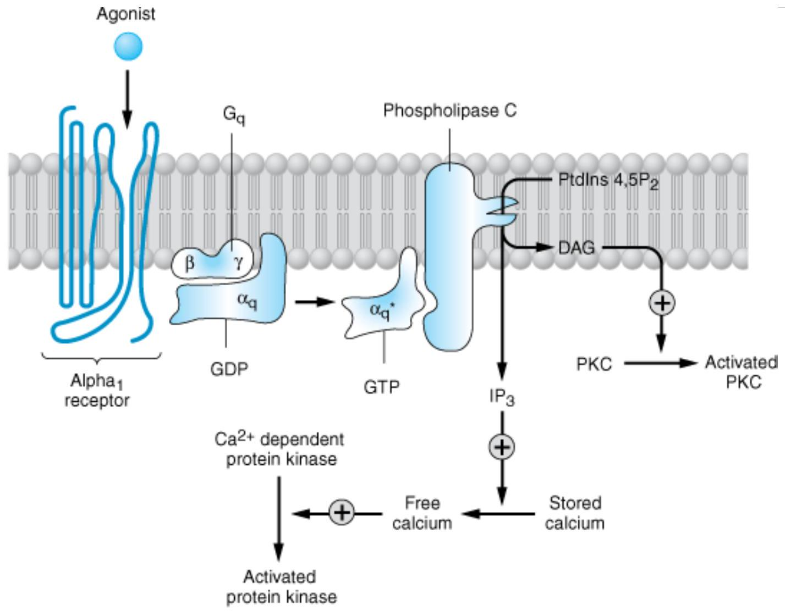
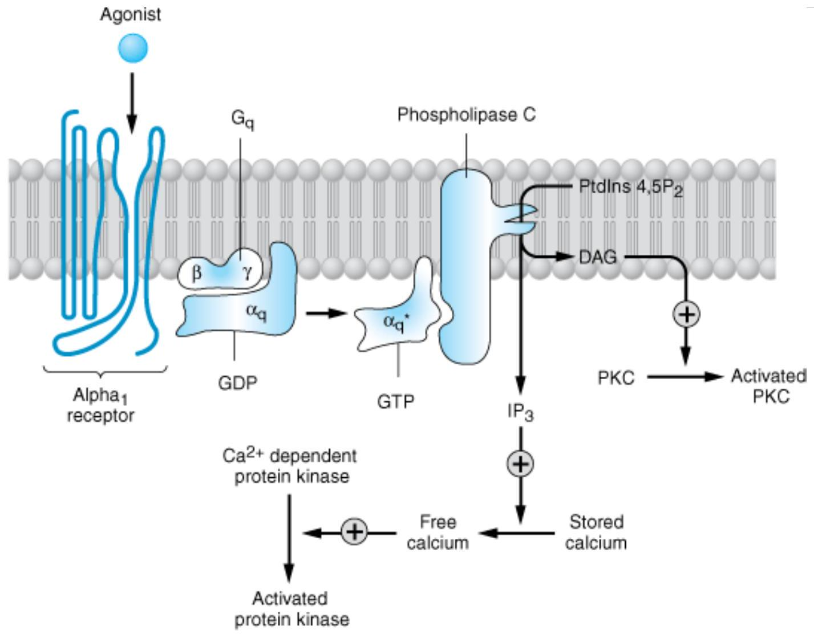
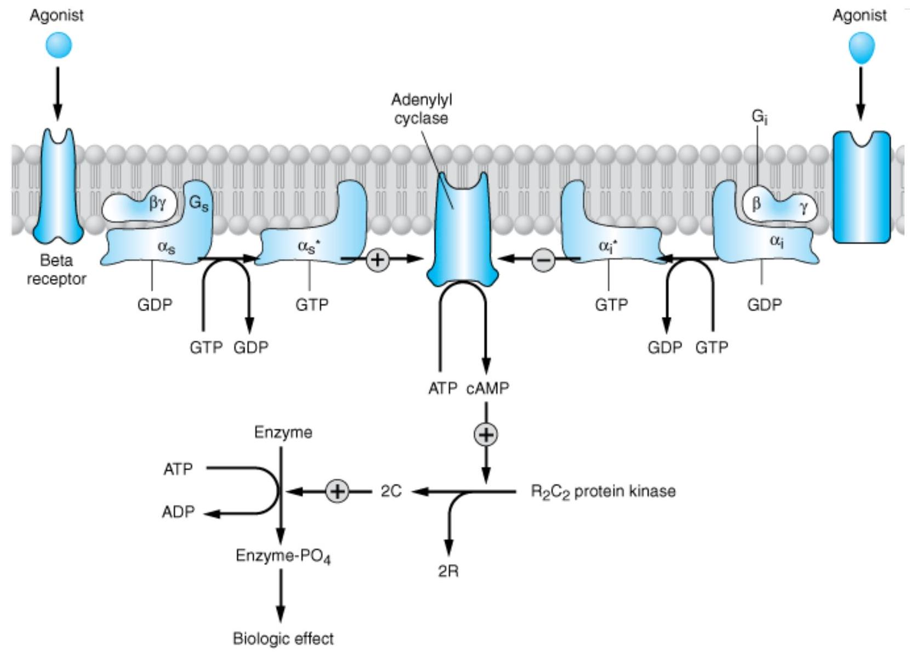
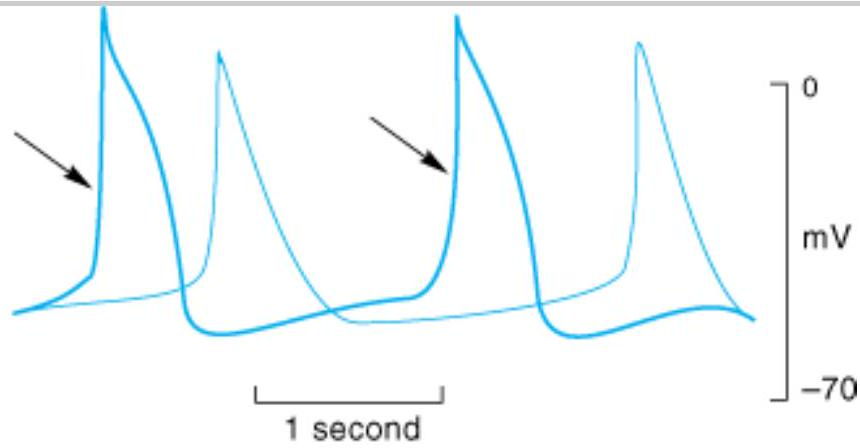
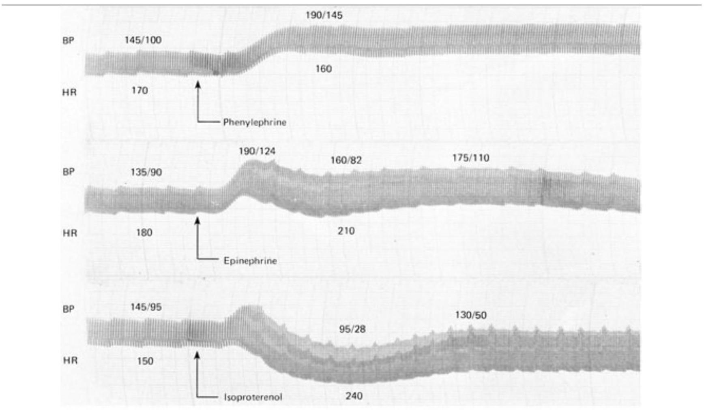
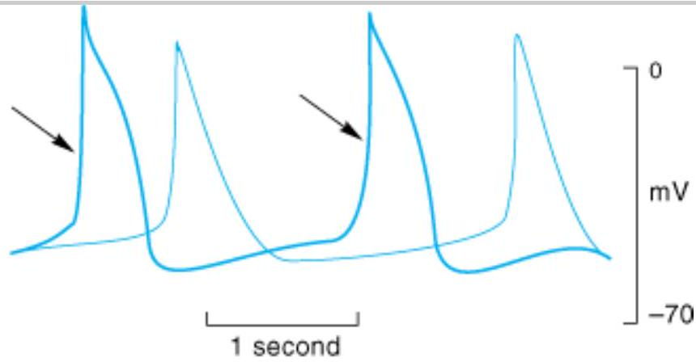
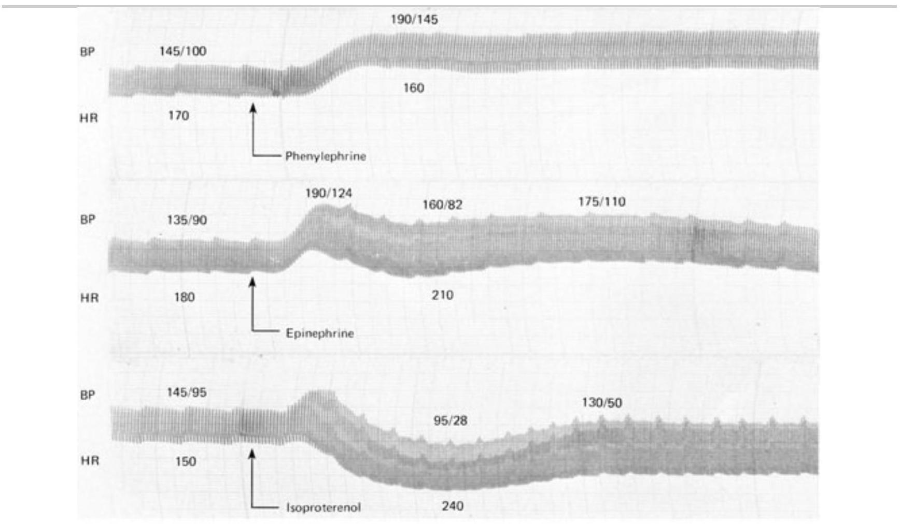

ADRENOCEPTOR-ACTI VATI NG & OTHER SYMPATHOMI METI C DRUGS
The sympathetic nervous system is an important regulator of the activities of organs such as the heart and peripheral vasculature, especially in responses to stress (see Chapter 6). The ultimate effects of sympathetic stimulation are mediated by release from nerve terminals of norepinephrine that serves to activate the adrenoceptors on postsynaptic sites. Also, in response to a variety of stimuli such as stress, the adrenal medulla releases epinephrine, which is transported in the blood to target tissues; in other words, epinephrine acts as a hormone. Drugs that mimic the actions of epinephrine or norepinephrine—sympathomimetic drugs —would be expected to have a wide range of effects. An understanding of the pharmacology of these agents is thus a logical extension of what we know about the physiologic role of the catecholamines.
The Mode & Spectrum of Action of Sympathomimetic Drugs
Like the cholinomimetic drugs, the sympathomimetics can be grouped by mode of action and by the spectrum of receptors that they activate. Some of these drugs (eg, norepinephrine and epinephrine) act by a direct mode; that is, they directly interact with and activate adrenoceptors. Others act indirectly ; their actions are dependent on the release of endogenous catecholamines. These indirect agents may have either of two different mechanisms: (1) displacement of stored catecholamines from the adrenergic nerve ending (eg, amphetamine and tyramine) or (2) inhibition of reuptake of catecholamines already released (eg, cocaine and tricyclic antidepressants). Some drugs have both direct and indirect actions. Both types of sympathomimetics, direct and indirect, ultimately cause activation of adrenoceptors, leading to some or all of the characteristic effects of endogenous catecholamines. The selectivity of different sympathomimetics for various types of adrenoceptors is discussed below.
BASI C PHARMACOLOGY OF SYMPATHOMI METI C DRUGS I DENTI FI CATI ON OF ADRENOCEPTORS
The effort to understand the molecular mechanisms by which catecholamines act has a long and rich history. A great conceptual debt is owed to the work done by John Langley and Paul Ehrlich 100 years ago in developing the hypothesis that drugs have their effects by interacting with specific "receptive" substances. Raymond Ahlquist in 1948 rationalized a large body of observations by his conjecture that catecholamines acted via two principal receptors. He termed these receptors cand B. Alpha receptors are those that have the comparative potencies epinephrine $\geq$ norepinephrine $\gg$ isoproterenol. Beta receptors have the comparative potencies isoproterenol > epinephrine $\equiv$ norepinephrine. Ahlquist's hypothesis was dramatically confirmed by the development of drugs that selectively antagonize Breceptors but not $a$. receptors (see Chapter 10). More recent evidence suggests that areceptors comprise two major families. At present, therefore, it appears appropriate to classify adrenoceptors into three major groups, namely, $B$, $\alpha_{1}$ , and $x_{2}$ receptors. Each of these major groups of receptors also has three subtypes. Considerable effort has been expended in elucidating structure-function relationships that determine ligand binding properties and the molecular signaling characteristics of the various adrenergic receptors.
| Receptor | Agonist | Antagonist | Effects | Gene on Chromosome |
|---|---|---|---|---|
| $\alpha_{1}$ type | Phenylephrine | Prazosin | $\uparrow P_{3}$, DAG common to all | |
| $\mathrm{V}$. 1 A | C5 | |||
| ${}^{2}$. 1 B | C8 | |||
| $\alpha_{1D}$ | C20 | |||
| Q2 type | Clonidine | Yohimbine | $\downarrow$ cAMP common to all | |
| 2 A | Oxymetazoline | C10 | ||
| 2 B | Prazosin | C2 | ||
| 2 C | Prazosin | C4 | ||
| B type | Isoproterenol | Propranolol | $\uparrow$ cAMP common to all | |
| $B_{1}$ | Dobutamine | Betaxolol | C10 | |
| $B_{2}$ | Albuterol | Butoxamine | C5 | |
| $B_{3}$ | C8 | |||
| Dopamine type | Dopamine | |||
| $\mathrm{D}_{1}$ | Fenoldopam | tcAMP | C5 | |
| $\mathrm{D}_{2}$ | Bromocriptine | $\downarrow$ cAMP | C11 | |
| $\mathrm{D}_{3}$ | $\downarrow$ CAMP | C3 | ||
| D 4 | Clozapine | $\downarrow$ CAMP | C11 | |
| D5 | cAMP | C4 |
BETA ADRENOCEPTORS
Soon after the demonstration of separate and Breceptors, it was found that there were at least two
subtypes of Breceptors, designated $B_{1}$ and $B_{2}$. These subtypes are operationally defined by their affinities for epinephrine and norepinephrine: $B_{1}$ receptors have approximately equal affinity for epinephrine and norepinephrine, whereas $B_{2}$ receptors have a higher affinity for epinephrine than for norepinephrine. Subsequently, $B_{3}$ receptors were identified as a novel and distinct third $B$-adrenoceptor subtype. These receptor types are listed in Table 9-1.
Soon after the demonstration of separate and Breceptors, it was found that there were at least two subtypes of Breceptors, designated $B_{1}$ and $B_{2}$. These subtypes are operationally defined by their affinities for epinephrine and norepinephrine: $B_{1}$ receptors have approximately equal affinity for epinephrine and norepinephrine, whereas $B_{2}$ receptors have a higher affinity for epinephrine than for norepinephrine. Subsequently, $B_{3}$ receptors were identified as a novel and distinct third $B$-adrenoceptor subtype. These receptor types are listed in Table 9-1.
ALPHA ADRENOCEPTORS
Following the demonstration of the Bsubtypes, two major groups of areceptors were found: $\alpha_{1}$ and $\alpha_{2}$. These receptors were originally identified with antagonist drugs that distinguished between $\alpha_{1}$ and $\alpha_{2}$ receptors. For example, cadrenoceptors were identified in a variety of tissues by measuring the binding of radiolabeled antagonist compounds that are considered to have a high affinity for these receptors, eg, dihydroergocryptine ( $\alpha_{1}$ and $\alpha_{2}$ ), prazosin ( $\alpha_{1}$ ), and yohimbine ( $\alpha_{2}$ ). These radioligands were used to measure the number of receptors in tissues and to determine the affinity (by displacement of the radiolabeled ligand) of other drugs that interact with the receptors.
The concept of subtypes within the group emerged out of pharmacologic experiments that demonstrated complex shapes of agonist dose-response curves of smooth muscle contraction as well as differences in antagonist affinities in inhibiting contractile responses in various tissues. These experiments demonstrated the existence of two subtypes of 1 receptor that could be distinguished on the basis of their reversible affinities for a variety of drugs and experimental compounds. A third $\alpha_{1}$-receptor subtype was subsequently identified by molecular cloning techniques. These $Q_{1}$ receptors are termed $Q_{1\mathrm{A}}$, and $Q_{1\mathrm{B}}$ receptors. There is evidence that the $Q_{1\mathrm{A}}$ receptor has splice variants. A major current area of investigation is determining the importance of each of these various subtypes in mediating $\alpha_{1}$-receptor responses in a variety of organs.
The hypothesis that there are subtypes of $\alpha_{2}$ receptors emerged from pharmacologic experiments and molecular cloning. It is now known that there are three subtypes of $\alpha_{2}$ receptors, termed $\alpha_{2A}$, $\alpha_{2B}$, and $\alpha_{2}$. 2c, which are products of distinct genes.
DOPAMINE RECEPTORS
The endogenous catecholamine dopamine produces a variety of biologic effects that are mediated by interactions with specific dopamine receptors (Table 9-1). These receptors are distinct from cand $B$ receptors and are particularly important in the brain (see Chapters 21 and 29) and in the splanchnic and renal vasculature. There is now considerable evidence for the existence of at least five subtypes of dopamine receptors. Pharmacologically distinct dopamine receptor subtypes, termed $\mathrm{D}_{1}$ and $\mathrm{D}_{2}$, have been known for some time. Molecular cloning has identified several distinct genes encoding each of these subtypes. Further complexity occurs because of the presence of introns within the coding region of the $\mathrm{D}_{2}$ like receptor genes, which allows for alternative splicing of the exons in this major subtype. There is extensive polymorphic variation in the $\mathrm{D}_{4}$ human receptor gene. The terminology of the various subtypes is $D_{1}, D_{2}, D_{3}, D_{4}$, and $D_{5}$. They comprise two $D_{1}$-like receptors ( $D_{1}$ and $D_{5}$ ) and three $D_{2}$-like ( $D_{2}, D_{3}$, and $\mathrm{D}_{4}$ ). These subtypes may have importance for understanding the efficacy and adverse effects of novel antipsychotic drugs (see Chapter 29).
Receptor Selectivity
Examples of clinically useful sympathomimetic agonists that are relatively selective for $\alpha_{1}-\alpha_{2}-$, and $B$ adrenoceptor subgroups are compared with some nonselective agents in Table 9-2. Selectivity means that a drug may preferentially bind to one subgroup of receptors at concentrations too low to interact extensively with another subgroup. For example, norepinephrine preferentially activates $B_{1}$ receptors compared with $B_{2}$ receptors. However, selectivity is not usually absolute (nearly absolute selectivity has been termed "specificity"), and at higher concentrations related classes of receptor may also interact with the drug. As a result, the "numeric" subclassification of adrenoceptors is clinically important mainly for drugs that have relatively marked selectivity. Given interpatient variations in drug kinetics and dynamics, the extent of a drug's selectivity should be kept in mind if this property is viewed as clinically important in the treatment of an individual patient.
| Relative Receptor Affinities |
|---|
| Alpha agonists |
| Phenylephrine, methoxamine |
| $a_{1}>a_{2} \ggg>B$ |
| Clonidine, methylnorepinephrine |
| $a_{2}>a_{1} \ggg \gg B$ |
| Mixed alpha and beta agonists |
| Norepinephrine |
| $a_{1}=a_{2}$; $b_{1} \gg b_{2}$ |
| Epinephrine |
| $\alpha_{1}=\alpha_{2}$; $\beta_{1}=\beta_{2}$ |
| Beta agonists |
| Dobutamine ${}^{1}$ |
| $B_{1}>B_{2} \ggg>a$. |
| Isoproterenol |
| $B_{1}=B_{2} \ggg>\alpha$. |
| Terbutaline, metaproterenol, albuterol, ritodrine |
| $B_{2} \gg B_{1} \ggg>\alpha$. |
| Dopamine agonists |
| Dopamine |
| $D_{1}=D_{2} \gg B \gg \alpha$. |
| Fenoldopam |
| $\mathrm{D}_{1} \gg \mathrm{D}_{2}$ |
${}^{1}$ See text.
The exact number of adrenoceptor subtypes that are actually expressed in human tissues is uncertain, but expression of subtypes has been demonstrated in tissues in which the physiologic or pharmacologic importance of the subtype is not yet known. These results suggest the possibility of designing novel drugs to exploit the expression of a particular receptor subtype in a single target tissue. For example, determining which blood vessels express which subtypes of $\alpha_{1}$ and $\alpha_{2}$ receptors could lead to design of drugs having selectivity for certain vascular beds such as the splanchnic or coronary vessels. Similarly, there has been extensive investigation into the $x_{1}$-receptor subtypes mediating pharmacologic responses in the human prostate (see Receptor Selectivity and Physiologic Functions of Adrenoceptor Subtypes).
Receptor Selectivity and Physiologic Functions of Adrenoceptor Subtypes: Lessons from Knockout Mice
Since pharmacologic tools used to evaluate the function of adrenoceptor subtypes have some limitations, a number of knockout mice have been developed with one or more adrenoceptor genes subjected to loss of function mutations, as described in Chapter 1 (see Pharmacology & Genetics). These models have their own complexities and extrapolations from mice to humans may be uncertain. Nonetheless, these studies have yielded some novel insights. For example, a-adrenoceptor subtypes play an important role in cardiac responses, the 2 A -adrenoceptor subtype is critical in transducing the effects of $a_{2}$ agonists on blood pressure control, and $B_{1}$ receptors play a predominant role in directly increasing heart rate in mouse heart.
MOLECULAR MECHANI SMS OF SYMPATHOMI METI C ACTI ON
The effects of catecholamines are mediated by cell surface receptors. As described in Chapter 2, these GPCRs (G protein-coupled receptors) are coupled by G proteins to the various effector proteins whose activities are regulated by those receptors. Each G protein is a heterotrimer consisting of $a$, $B$, and $\gamma$ subunits. G proteins are classified on the basis of their distinctive asubunits. G proteins of particular importance for adrenoceptor function include $\mathbf{G}_{\mathbf{s}}$, the stimulatory G protein of adenylyl cyclase; $\mathbf{G}_{\mathbf{i}}$, the inhibitory G protein of adenylyl cyclase; and $\mathbf{G}_{\mathbf{q}}$, the protein coupling areceptors to phospholipase C. The activation of G protein-coupled receptors by catecholamines promotes the dissociation of GDP from the as subunit of the appropriate G protein. GTP then binds to this G protein, and the asubunit dissociates from the B-$\gamma$ unit. The activated GTP-bound asubunit then regulates the activity of its effector. Effectors of adrenoceptor-activated asubunits include adenylyl cyclase, cGMP phosphodiesterase, phospholipase C, and ion channels. The asubunit is inactivated by hydrolysis of the bound GTP to GDP and phosphate, and the subsequent reassociation of the asubunit with the B-$\gamma$ subunit. The B-$\gamma$ subunits have additional independent effects, acting on a variety of effectors such as ion channels and enzymes.
Receptor Types
ALPHA RECEPTORS
Alpha $_{1}$ receptors are coupled to polyphosphoinositide hydrolysis, leading to the formation of inositol 1,4,5trisphosphate (I P3) and diacylglycerol (DAG) (Table 9-1, Figure 9-1). G proteins in the $\mathrm{G}_{\mathrm{q}}$ family couple ${}_{1}$ receptors to phospholipase C . IP 3 promotes the release of sequestered $\mathrm{Ca}^{2+}$ from intracellular stores, which increases the cytoplasmic concentration of free $\mathrm{Ca}^{2+}$ and the activation of various calciumdependent protein kinases. Activation of these receptors may also increase influx of calcium across the cell's plasma membrane. IP 3 is sequentially dephosphorylated, which ultimately leads to the formation of free inositol. DAG activates protein kinase C, which modulates activity of many signaling pathways. In addition, $x_{1}$ receptors activate signal transduction pathways that were originally described for peptide growth factor receptors that activate tyrosine kinases. For example, $Q_{1}$ receptors have been found to activate mitogen-activated kinases (MAP kinases) and polyphosphoinositol-3-kinase (PI-3-kinase). These pathways may have importance for the $c_{1}$-receptor-mediated stimulation of cell growth and proliferation through the regulation of gene expression. The physiologic significance of this "cross talk" between major signaling pathways remains to be determined.

Copyright ©2006 by The McGraw-Hill Companies, Inc. All rights reserved.
Activation of $Q_{1}$ responses. Stimulation of $Q_{1}$ receptors by catecholamines leads to the activation of a $\mathrm{G}_{\mathrm{q}}$-coupling protein. The activated asubunit ( $\alpha_{\mathrm{q}} *$ ) of this G protein activates the effector, phospholipase C , which leads to the release of IP ${}_{3}$ (inositol 1,4,5-trisphosphate) and DAG (diacylglycerol) from phosphatidylinositol 4,5-bisphosphate (PtdIns 4,5-P ${ }_{2}$ ). IP ${ }_{3}$ stimulates the release of sequestered stores of calcium, leading to an increased concentration of cytoplasmic $\mathrm{Ca}^{2+}$. $\mathrm{Ca}^{2+}$ may then activate $\mathrm{Ca}^{2+}$-dependent protein kinases, which in turn phosphorylate their substrates. DAG activates protein kinase C (PKC). See text for additional effects of $Q_{1}$-receptor activation.
Alpha ${ }_{2}$ receptors inhibit adenylyl cyclase activity and cause intracellular cyclic adenosine monophosphate (cAMP) levels to decrease. In addition to this well-documented effect, $\alpha_{2}$ receptors utilize other signaling pathways, including regulation of ion channel activities and the activities of important enzymes involved in signal transduction. $a_{2}$-receptor-mediated inhibition of adenylyl cyclase activity is transduced by the inhibitory regulatory protein, $\mathrm{G}_{\mathrm{i}}$ (Figure 9-2). How the activation of $\mathrm{G}_{\mathrm{i}}$ leads to the inhibition of adenylyl cyclase is unclear, but it is likely that both a and the B-$\gamma$ subunits of $G_{i}$ contribute to this response. In addition, some of the effects of $a_{2}$ adrenoceptors are independent of their ability to inhibit adenylyl cyclase; for example, $\alpha_{2}$-receptor agonists cause platelet aggregation and a decrease in platelet cAMP levels, but it is not clear whether aggregation is the result of the decrease in cAMP or other mechanisms involving $G_{i}$ regulated effectors.
ALPHA RECEPTORS
Alpha $_{1}$ receptors are coupled to polyphosphoinositide hydrolysis, leading to the formation of inositol 1,4,5trisphosphate (I P3) and diacylglycerol (DAG) (Table 9-1, Figure 9-1). G proteins in the $\mathrm{G}_{\mathrm{q}}$ family couple ${}_{1}$ receptors to phospholipase C . IP 3 promotes the release of sequestered $\mathrm{Ca}^{2+}$ from intracellular stores, which increases the cytoplasmic concentration of free $\mathrm{Ca}^{2+}$ and the activation of various calciumdependent protein kinases. Activation of these receptors may also increase influx of calcium across the cell's plasma membrane. IP 3 is sequentially dephosphorylated, which ultimately leads to the formation of free inositol. DAG activates protein kinase C, which modulates activity of many signaling pathways. In addition, $x_{1}$ receptors activate signal transduction pathways that were originally described for peptide growth factor receptors that activate tyrosine kinases. For example, $Q_{1}$ receptors have been found to activate mitogen-activated kinases (MAP kinases) and polyphosphoinositol-3-kinase (PI-3-kinase). These pathways may have importance for the $c_{1}$-receptor-mediated stimulation of cell growth and proliferation through the regulation of gene expression. The physiologic significance of this "cross talk" between major signaling pathways remains to be determined.
Copyright ©2006 by The McGraw-Hill Companies, Inc. All rights reserved.
Activation of $Q_{1}$ responses. Stimulation of $Q_{1}$ receptors by catecholamines leads to the activation of a $\mathrm{G}_{\mathrm{q}}$-coupling protein. The activated asubunit ( $\alpha_{\mathrm{q}} *$ ) of this G protein activates the effector, phospholipase C , which leads to the release of IP ${}_{3}$ (inositol 1,4,5-trisphosphate) and DAG (diacylglycerol) from phosphatidylinositol 4,5-bisphosphate (PtdIns 4,5-P ${ }_{2}$ ). IP ${ }_{3}$ stimulates the release of sequestered stores of calcium, leading to an increased concentration of cytoplasmic $\mathrm{Ca}^{2+}$. $\mathrm{Ca}^{2+}$ may then activate $\mathrm{Ca}^{2+}$-dependent protein kinases, which in turn phosphorylate their substrates. DAG activates protein kinase C (PKC). See text for additional effects of $Q_{1}$-receptor activation.
Alpha ${ }_{2}$ receptors inhibit adenylyl cyclase activity and cause intracellular cyclic adenosine monophosphate (cAMP) levels to decrease. In addition to this well-documented effect, $\alpha_{2}$ receptors utilize other signaling pathways, including regulation of ion channel activities and the activities of important enzymes involved in signal transduction. $a_{2}$-receptor-mediated inhibition of adenylyl cyclase activity is transduced by the inhibitory regulatory protein, $\mathrm{G}_{\mathrm{i}}$ (Figure 9-2). How the activation of $\mathrm{G}_{\mathrm{i}}$ leads to the inhibition of adenylyl cyclase is unclear, but it is likely that both a and the B-$\gamma$ subunits of $G_{i}$ contribute to this response. In addition, some of the effects of $a_{2}$ adrenoceptors are independent of their ability to inhibit adenylyl cyclase; for example, $\alpha_{2}$-receptor agonists cause platelet aggregation and a decrease in platelet cAMP levels, but it is not clear whether aggregation is the result of the decrease in cAMP or other mechanisms involving $G_{i}$ regulated effectors.
BETA RECEPTORS
The mechanism of action of Bagonists has been studied in considerable detail. Activation of all three receptor subtypes ( $B_{1}, B_{2}$, and $B_{3}$ ) results in activation of adenylyl cyclase and increased conversion of adenosine triphosphate (ATP) to cAMP (Table 9-1, Figure 9-2). Activation of the cyclase enzyme is mediated by the stimulatory coupling protein $\mathrm{G}_{\mathrm{s}}$. cAMP is the major second messenger of B-receptor activation. For example, in the liver of many species, B-receptor activation increases cAMP synthesis, which leads to a cascade of events culminating in the activation of glycogen phosphorylase. In the heart, Breceptor activation increases the influx of calcium across the cell membrane and its sequestration inside the cell. Beta-receptor activation also promotes the relaxation of smooth muscle. Although the mechanism of the smooth muscle effect is uncertain, it may involve the phosphorylation of myosin light-chain kinase to an inactive form (see Figure 12-1). Beta adrenoceptors may activate voltage-sensitive calcium channels in the heart via $\mathrm{G}_{\mathrm{s}}$-mediated enhancement independently of changes in cAMP concentration. Under certain circumstances, $B_{2}$ receptors may couple to $G_{q}$ proteins. These receptors have been demonstrated to activate additional kinases, such as MAP kinases, by forming multi-subunit complexes within cells, which contain multiple signaling molecules. In addition, recent evidence suggests that formation of dimers of B receptors themselves (both homodimers and heterodimers of $B_{1}$ and $B_{2}$ receptors) is prominently involved in their signaling mechanisms. Moreover, agonist activation of Breceptors promotes the association of several different proteins with these receptors, leading to activation of novel, additional signal pathways that regulate complex intracellular functions. Similarly, additional proteins interact directly with $\alpha_{1}$ and $\alpha_{2}$ receptors, leading to further physiologic responses at a cellular level.
Copyright ©2006 by The McGraw-Hill Companies, Inc. All rights reserved.
Activation and inhibition of adenylyl cyclase by agonists that bind to catecholamine receptors. Binding to Badrenoceptors stimulates adenylyl cyclase by activating the stimulatory G protein, $\mathrm{G}_{\mathrm{s}}$, which leads to the dissociation of its as subunit  synthesis of cAMP. Alphaz -adrenoceptor ligands inhibit adenylyl cyclase by causing dissociation of the inhibitory G protein, $G_{i}$, into its subunits; ie, an activated $Q_{i}$ subunit charged with GTP and a Brunit. The mechanism by which these subunits inhibit adenylyl cyclase is uncertain. CAMP binds to the regulatory subunit (R) of cAMP-dependent protein kinase, leading to the liberation of active catalytic subunits (C) that phosphorylate specific protein substrates and modify their activity. These catalytic units also phosphorylate the cAMP response element binding protein (CREB), which modifies gene expression. See text for other actions of $B$ and $\alpha_{2}$ adrenoceptors.
DOPAMINE RECEPTORS
The $D_{1}$ receptor is typically associated with the stimulation of adenylyl cyclase (Table 9-1); for example, $D_{1}$ -receptor-induced smooth muscle relaxation is presumably due to cAMP accumulation in the smooth muscle of those vascular beds in which dopamine is a vasodilator. $\mathrm{D}_{2}$ receptors have been found to inhibit adenylyl cyclase activity, open potassium channels, and decrease calcium influx.
The $D_{1}$ receptor is typically associated with the stimulation of adenylyl cyclase (Table 9-1); for example, $D_{1}$ -receptor-induced smooth muscle relaxation is presumably due to cAMP accumulation in the smooth muscle of those vascular beds in which dopamine is a vasodilator. $\mathrm{D}_{2}$ receptors have been found to inhibit adenylyl cyclase activity, open potassium channels, and decrease calcium influx.
Receptor Regulation
Responses mediated by adrenoceptors are not fixed and static. The number and function of adrenoceptors on the cell surface and their responses may be regulated by catecholamines themselves, other hormones and drugs, age, and a number of disease states (see Chapter 2). These changes may modify the magnitude of a tissue's physiologic response to catecholamines and can be important clinically during the course of treatment. One of the best-studied examples of receptor regulation is the desensitization of adrenoceptors that may occur after exposure to catecholamines and other sympathomimetic drugs. After a cell or tissue has been exposed for a period of time to an agonist, that tissue often becomes less responsive to further stimulation by that agent. Other terms such as tolerance, refractoriness, and tachyphylaxis have also been used to denote desensitization. This process has potential clinical significance because it may limit the therapeutic response to sympathomimetic agents.
Many mechanisms have been found to contribute to desensitization. Operating at transcriptional, translational, and protein levels, some mechanisms function relatively slowly—over the course of hours or days. Other mechanisms of desensitization occur quickly, within minutes. Rapid modulation of receptor function in desensitized cells may involve critical covalent modification of the receptor, especially by phosphorylation on specific amino acid residues, association of these receptors with other proteins, or changes in their subcellular location.
There are two major categories of desensitization of responses mediated by G protein-coupled receptors. Homologous desensitization refers to loss of responsiveness exclusively of the receptors that have been exposed to repeated or sustained activation by a drug. Heterologous desensitization refers to loss of responsiveness of some cell surface receptors that have not been directly activated by the drug in question.
A major mechanism of desensitization that occurs rapidly involves phosphorylation of receptors by members of the $\mathbf{G}$ protein-coupled receptor kinase (GRK) family, of which there are at least seven members. Specific adrenoceptors are substrates for these kinases only when they are bound to an agonist. This mechanism is an example of homologous desensitization because it specifically involves only agonistoccupied receptors.
Phosphorylation of these receptors enhances their affinity for Barrestins; upon binding of a B-arrestin molecule, the capacity of the receptor to activate G proteins is blunted, presumably due to steric hindrance (see Figure 2-12). Arrestins constitute another large family of widely expressed proteins. Receptor phosphorylation followed by B-arrestin binding has been linked to subsequent endocytosis of the receptor. This response may be facilitated by the capacity of Barrestins to bind to the structural protein clathrin. In addition to blunting responses requiring the presence of the receptor on the cell surface, these regulatory processes may also contribute to novel mechanisms of receptor signaling via intracellular pathways.
Receptor desensitization may also be mediated by second-messenger feedback. For example, B adrenoceptors stimulate cAMP accumulation, which leads to activation of protein kinase A; protein kinase A can phosphorylate residues on Breceptors, resulting in inhibition of receptor function. For the $B_{2}$ receptor, phosphorylation occurs on serine residues both in the third cytoplasmic loop and in the carboxyl terminal tail of the receptor. Similarly, activation of protein kinase C by $\mathrm{G}_{\mathrm{q}}$-coupled receptors may lead to phosphorylation of this class of G protein-coupled receptors. This second-messenger feedback mechanism has been termed heterologous desensitization because activated protein kinase A or protein kinase C may phosphorylate any structurally similar receptor with the appropriate consensus sites for phosphorylation by these enzymes.
ADRENOCEPTOR POLYMORPHISMS
Since elucidation of the sequences of the genes encoding the $\alpha_{1}$, $\alpha_{2}$, and Bsubtypes of adrenoceptors, it has become clear that there are relatively common genetic polymorphisms for many of these receptor subtypes in humans. Some of these may lead to changes in critical amino acid sequences that have pharmacologic importance. There is evidence that some of these polymorphisms may change the susceptibility to diseases such as heart failure, alter the propensity of a receptor to desensitize, and alter therapeutic responses to drugs in diseases such as asthma.
CHEMI STRY & PHARMACOKI NETI CS OF SYMPATHOMI METIC DRUGS
Phenylethylamine may be considered the parent compound from which sympathomimetic drugs are derived (Figure 9-3). This compound consists of a benzene ring with an ethylamine side chain. Substitutions may be made (1) on the terminal amino group, (2) on the benzene ring, and (3) on the aror Bcarbons. Substitution by -OH groups at the 3 and 4 positions yields sympathomimetic drugs collectively known as catecholamines. The effects of modification of phenylethylamine are to change the affinity of the drugs for $a$. and Breceptors as well as to influence the intrinsic ability to activate the receptors. In addition, chemical structure determines the pharmacokinetic properties of these molecules. Sympathomimetic drugs may activate both and Breceptors; however, the relative a.receptor versus B-receptor activity spans the range from almost pure activity (methoxamine) to almost pure Bactivity (isoproterenol).

Copyright ©2006 by The McGraw-Hill Companies, Inc. All rights reserved.
Phenylethylamine and some important catecholamines. Catechol is shown for reference.
SUBSTITUTION ON THE AMI NO GROUP
Increasing the size of alkyl substituents on the amino group tends to increase $B$-receptor activity. For example, methyl substitution on norepinephrine, yielding epinephrine, enhances activity at $B_{2}$ receptors. Beta activity is further enhanced with isopropyl substitution at the amino nitrogen (isoproterenol). Betaz selective agonists generally require a large amino substituent group. The larger the substituent on the amino group, the lower the activity at areceptors; for example, isoproterenol is very weak at areceptors.
SUBSTITUTION ON THE BENZENE RING
Maximal cand Bactivity is found with catecholamines (drugs having - OH groups at the 3 and 4 positions). The absence of one or the other of these groups, particularly the hydroxyl at $\mathrm{C}_{3}$, without other substitutions on the ring may dramatically reduce the potency of the drugs. For example, phenylephrine (Figure 9-4) is much less potent than epinephrine; indeed, a-receptor affinity is decreased about 100-fold and Bactivity is almost negligible except at very high concentrations. However, catecholamines are subject to inactivation by catechol-O- methyltransferase (COMT), an enzyme found in gut and liver (see Chapter 6). Therefore, absence of one or both - OH groups on the phenyl ring increases the bioavailability after oral administration and prolongs the duration of action. Furthermore, absence of ring - OH groups tends to increase the distribution of the molecule to the central nervous system. For example, ephedrine and amphetamine (Figure 9-4) are orally active, have a prolonged duration of action, and produce central nervous system effects not typically observed with the catecholamines.

Copyright ©2006 by The McGraw-Hill Companies, Inc. All rights reserved.
Some examples of noncatecholamine sympathomimetic drugs. The isopropyl group is shown in gray.
SUBSTITUTION ON THE ALPHA CARBON
Substitutions at the acarbon block oxidation by monoamine oxidase (MAO) and prolong the action of such drugs, particularly the noncatecholamines. Ephedrine and amphetamine are examples of as a compounds (Figure 9-4). Alpha-methyl compounds are also called phenylisopropylamines. In addition to their resistance to oxidation by MAO, some phenylisopropylamines have an enhanced ability to displace catecholamines from storage sites in noradrenergic nerves (see Chapter 6). Therefore, a portion of their activity is dependent on the presence of normal norepinephrine stores in the body; they are indirectly acting sympathomimetics.
SUBSTITUTION ON THE BETA CARBON
Direct-acting agonists typically have a B-hydroxyl group, though dopamine does not. In addition to facilitating activation of adrenoceptors, this hydroxyl group may be important for storage of sympathomimetic amines in neural vesicles.
ORGAN SYSTEM EFFECTS OF SYMPATHOMI METI C DRUGS
General outlines of the cellular actions of sympathomimetics are presented in Tables 6-3 and 9-3. The net effect of a given drug in the intact organism depends on its relative receptor affinity (a. or B), intrinsic activity, and the compensatory reflexes evoked by its direct actions.
Cardiovascular System
BLOOD VESSELS
Vascular smooth muscle tone is regulated by adrenoceptors; consequently, catecholamines are important in controlling peripheral vascular resistance and venous capacitance. Alpha receptors increase arterial resistance, whereas $B_{2}$ receptors promote smooth muscle relaxation. There are major differences in receptor types in the various vascular beds (Table 9-4). The skin vessels have predominantly areceptors and constrict in response to epinephrine and norepinephrine, as do the splanchnic vessels. Vessels in skeletal muscle may constrict or dilate depending on whether breceptors are activated. Consequently,
the overall effects of a sympathomimetic drug on blood vessels depend on the relative activities of that drug at and Breceptors and the anatomic sites of the vessels affected. In addition, $\mathrm{D}_{1}$ receptors promote vasodilation of renal, splanchnic, coronary, cerebral, and perhaps other resistance vessels. Activation of the $\mathrm{D}_{1}$ receptors in the renal vasculature may play a major role in the natriuresis induced by pharmacologic administration of dopamine.
Table 9-4. Cardiovascular Responses to Sympathomimetic Amines. ${}^{1}$
Phenylephrine
Epinephrine
Isoproterenol
Vascular resistance (tone)
Cutaneous, mucous membranes (a.)
+
+
0
Skeletal muscle ($B_{2}$, v.)
i
+or +
t.t
Renal (a, $D_{1}$ )
+
+
+
Splanchnic (a., B)
t +
+or +${}^{2}$
+
Total peripheral resistance
+ + +
+or +${}^{2}$
+\downarrow
Venous tone (a, B)
$\uparrow$
$\dagger$
$\downarrow$
Cardiac
Contractility ( $B_{1}$ )
0 or $\dagger$
$\uparrow \uparrow \uparrow$
$\uparrow \uparrow \uparrow$
Heart rate (predominantly $B_{1}$ )
$\downarrow \downarrow$ (vagal reflex)
tor $\downarrow$
$\uparrow \uparrow \uparrow$
Stroke volume
$0, \downarrow, \uparrow$
$\uparrow$
$\uparrow$
Cardiac output
$\downarrow$
$\uparrow$
$\uparrow \uparrow$
Blood pressure
Mean
$\uparrow \uparrow$
$\uparrow$
$\downarrow$
Diastolic
$\uparrow \uparrow$
tor $\mathrm{t}^{2}$
$\downarrow \downarrow$
Systolic
$\uparrow \uparrow$
$\uparrow \uparrow$
0 or $\downarrow$
Pulse pressure
0
$\uparrow \dagger$
$\uparrow \uparrow$
${}^{1}$ = increase; $\downarrow$= decrease; 0 = no change.
${}^{2}$ Small doses decrease, large doses increase.
HEART
Direct effects on the heart are determined largely by $B_{1}$ receptors, although $B_{2}$ and to a lesser extent $x$. receptors are also involved, especially in heart failure. Beta-receptor activation results in increased calcium influx in cardiac cells. This has both electrical (Figure 9-5) and mechanical consequences. Pacemaker activity, both normal (sinoatrial node) and abnormal (eg, Purkinje fibers), is increased (positive chronotropic effect). Conduction velocity in the atrioventricular node is increased, and the refractory period is decreased. Intrinsic contractility is increased (positive inotropic effect), and relaxation is accelerated. As a result, the twitch response of isolated cardiac muscle is increased in tension but abbreviated in duration. In the intact heart, intraventricular pressure rises and falls more rapidly, and ejection time is decreased. These direct effects are easily demonstrated in the absence of reflexes evoked by changes in blood pressure, eg, in isolated myocardial preparations and in patients with ganglionic blockade. In the presence of normal reflex activity, the direct effects on heart rate may be dominated by a reflex response to blood pressure changes. Physiologic stimulation of the heart by catecholamines tends to increase coronary blood flow.

Copyright ©2006 by The McGraw-Hill Companies, Inc. All rights reserved.
Effect of epinephrine on the transmembrane potential of a pacemaker cell in the frog heart. The arrowed trace was recorded after the addition of epinephrine. Note the increased slope of diastolic depolarization and decreased interval
between action potentials. This pacemaker acceleration is typical of $B_{1}$-stimulant drugs. (Modified and reproduced, with permission, from Brown H, Giles W, Noble S: Membrane currents underlying rhythmic activity in frog sinus venosus. In: Bonke FIM [editor]: The Sinus Node: Structure, Function, and Clinical Relevance. Martinus Nijhoff, 1978.)
BLOOD PRESSURE
The effects of sympathomimetic drugs on blood pressure can be explained on the basis of their effects on the heart, the peripheral vascular resistance, and the venous return (see Figure 6-7 and Table 9-4). A relatively pure agonist such as phenylephrine increases peripheral arterial resistance and decreases venous capacitance. The enhanced arterial resistance usually leads to a dose-dependent rise in blood pressure (Figure 9-6). In the presence of normal cardiovascular reflexes, the rise in blood pressure elicits a baroreceptor-mediated increase in vagal tone with slowing of the heart rate, which may be quite marked. However, cardiac output may not diminish in proportion to this reduction in rate, since increased venous return may increase stroke volume. Furthermore, direct a-adrenoceptor stimulation of the heart may have a modest positive inotropic action. While these are the expected effects of pure aganists in normal subjects, their use in hypotensive patients usually does not lead to brisk reflex responses because in this situation blood pressure is returning to normal, not exceeding normal.

Copyright ©2006 by The McGraw-Hill Companies, Inc. All rights reserved.
Effects of an $\alpha$-selective (phenylephrine), $\beta$-selective (isoproterenol), and nonselective (epinephrine) sympathomimetic, given as an intravenous bolus injection to a dog. (BP, blood pressure; HR, heart rate.) Reflexes are blunted but not eliminated in this anesthetized animal.
The blood pressure response to a pure B-adrenoceptor agonist is quite different. Stimulation of Breceptors in the heart increases cardiac output. A relatively pure Bagonist such as isoproterenol also decreases peripheral resistance by activating $B_{2}$ receptors, leading to vasodilation in certain vascular beds (Table 9-4). The net effect is to maintain or slightly increase systolic pressure while permitting a fall in diastolic pressure owing to enhanced diastolic runoff (Figure 9-6). The actions of drugs with both cand Beffects (eg, epinephrine and norepinephrine) are discussed below.
BLOOD VESSELS
Vascular smooth muscle tone is regulated by adrenoceptors; consequently, catecholamines are important in controlling peripheral vascular resistance and venous capacitance. Alpha receptors increase arterial resistance, whereas $B_{2}$ receptors promote smooth muscle relaxation. There are major differences in receptor types in the various vascular beds (Table 9-4). The skin vessels have predominantly areceptors and constrict in response to epinephrine and norepinephrine, as do the splanchnic vessels. Vessels in skeletal muscle may constrict or dilate depending on whether breceptors are activated. Consequently, the overall effects of a sympathomimetic drug on blood vessels depend on the relative activities of that drug at and Breceptors and the anatomic sites of the vessels affected. In addition, $\mathrm{D}_{1}$ receptors promote vasodilation of renal, splanchnic, coronary, cerebral, and perhaps other resistance vessels. Activation of the $\mathrm{D}_{1}$ receptors in the renal vasculature may play a major role in the natriuresis induced by pharmacologic administration of dopamine.
| Phenylephrine | Epinephrine | Isoproterenol | |
|---|---|---|---|
| Vascular resistance (tone) | |||
| Cutaneous, mucous membranes (a.) | + | + | 0 |
| Skeletal muscle ($B_{2}$, v.) | i | +or + | t.t |
| Renal (a, $D_{1}$ ) | + | + | + |
| Splanchnic (a., B) | t + | +or +${}^{2}$ | + |
| Total peripheral resistance | + + + | +or +${}^{2}$ | +\downarrow |
| Venous tone (a, B) | |||
| $\uparrow$ | $\dagger$ | $\downarrow$ | |
| Cardiac | |||
| Contractility ( $B_{1}$ ) | 0 or $\dagger$ | $\uparrow \uparrow \uparrow$ | |
| $\uparrow \uparrow \uparrow$ | |||
| Heart rate (predominantly $B_{1}$ ) | $\downarrow \downarrow$ (vagal reflex) | tor $\downarrow$ | $\uparrow \uparrow \uparrow$ |
| Stroke volume | $0, \downarrow, \uparrow$ | $\uparrow$ | $\uparrow$ |
| Cardiac output | $\downarrow$ | $\uparrow$ | $\uparrow \uparrow$ |
| Blood pressure | |||
| Mean | $\uparrow \uparrow$ | $\uparrow$ | $\downarrow$ |
| Diastolic | $\uparrow \uparrow$ | tor $\mathrm{t}^{2}$ | $\downarrow \downarrow$ |
| Systolic | $\uparrow \uparrow$ | $\uparrow \uparrow$ | 0 or $\downarrow$ |
| Pulse pressure | 0 | $\uparrow \dagger$ | $\uparrow \uparrow$ |
${}^{1}$ = increase; $\downarrow$= decrease; 0 = no change.
${}^{2}$ Small doses decrease, large doses increase.
HEART
Direct effects on the heart are determined largely by $B_{1}$ receptors, although $B_{2}$ and to a lesser extent $x$. receptors are also involved, especially in heart failure. Beta-receptor activation results in increased calcium influx in cardiac cells. This has both electrical (Figure 9-5) and mechanical consequences. Pacemaker activity, both normal (sinoatrial node) and abnormal (eg, Purkinje fibers), is increased (positive chronotropic effect). Conduction velocity in the atrioventricular node is increased, and the refractory period is decreased. Intrinsic contractility is increased (positive inotropic effect), and relaxation is accelerated. As a result, the twitch response of isolated cardiac muscle is increased in tension but abbreviated in duration. In the intact heart, intraventricular pressure rises and falls more rapidly, and ejection time is decreased. These direct effects are easily demonstrated in the absence of reflexes evoked by changes in blood pressure, eg, in isolated myocardial preparations and in patients with ganglionic blockade. In the presence of normal reflex activity, the direct effects on heart rate may be dominated by a reflex response to blood pressure changes. Physiologic stimulation of the heart by catecholamines tends to increase coronary blood flow.
Copyright ©2006 by The McGraw-Hill Companies, Inc. All rights reserved.
Effect of epinephrine on the transmembrane potential of a pacemaker cell in the frog heart. The arrowed trace was recorded after the addition of epinephrine. Note the increased slope of diastolic depolarization and decreased interval between action potentials. This pacemaker acceleration is typical of $B_{1}$-stimulant drugs. (Modified and reproduced, with permission, from Brown H, Giles W, Noble S: Membrane currents underlying rhythmic activity in frog sinus venosus. In: Bonke FIM [editor]: The Sinus Node: Structure, Function, and Clinical Relevance. Martinus Nijhoff, 1978.)
BLOOD PRESSURE
The effects of sympathomimetic drugs on blood pressure can be explained on the basis of their effects on the heart, the peripheral vascular resistance, and the venous return (see Figure 6-7 and Table 9-4). A relatively pure agonist such as phenylephrine increases peripheral arterial resistance and decreases venous capacitance. The enhanced arterial resistance usually leads to a dose-dependent rise in blood pressure (Figure 9-6). In the presence of normal cardiovascular reflexes, the rise in blood pressure elicits a baroreceptor-mediated increase in vagal tone with slowing of the heart rate, which may be quite marked. However, cardiac output may not diminish in proportion to this reduction in rate, since increased venous return may increase stroke volume. Furthermore, direct a-adrenoceptor stimulation of the heart may have a modest positive inotropic action. While these are the expected effects of pure aganists in normal subjects, their use in hypotensive patients usually does not lead to brisk reflex responses because in this situation blood pressure is returning to normal, not exceeding normal.
Copyright ©2006 by The McGraw-Hill Companies, Inc. All rights reserved.
Effects of an $\alpha$-selective (phenylephrine), $\beta$-selective (isoproterenol), and nonselective (epinephrine) sympathomimetic, given as an intravenous bolus injection to a dog. (BP, blood pressure; HR, heart rate.) Reflexes are blunted but not eliminated in this anesthetized animal.
The blood pressure response to a pure B-adrenoceptor agonist is quite different. Stimulation of Breceptors in the heart increases cardiac output. A relatively pure Bagonist such as isoproterenol also decreases peripheral resistance by activating $B_{2}$ receptors, leading to vasodilation in certain vascular beds (Table 9-4). The net effect is to maintain or slightly increase systolic pressure while permitting a fall in diastolic pressure owing to enhanced diastolic runoff (Figure 9-6). The actions of drugs with both cand Beffects (eg, epinephrine and norepinephrine) are discussed below.
Eye
The radial pupillary dilator muscle of the iris contains creceptors; activation by drugs such as phenylephrine causes mydriasis (see Figure 6-9). Alpha stimulants also have important effects on intraocular pressure. Present evidence suggests that agonists increase the outflow of aqueous humor from the eye and reduce intraocular pressure. In contrast, Bagonists have little effect, but Bantagonists decrease the production of aqueous humor. These effects are important in the treatment of glaucoma (see Chapter 10), a leading cause of blindness. Beta stimulants relax the ciliary muscle to a minor degree, causing an insignificant decrease in accommodation. In addition, adrenergic drugs may directly protect neuronal cells in the retina.
Respiratory Tract
Bronchial smooth muscle contains $B_{2}$ receptors that cause relaxation. Activation of these receptors results in bronchodilation (see Chapter 20 and Table 9-3). The blood vessels of the upper respiratory tract mucosa contain areceptors; the decongestant action of adrenoceptor stimulants is clinically useful (see Clinical Pharmacology).
| Type | Tissue | Actions |
|---|---|---|
| Q. 1 | ||
| Most vascular smooth muscle (innervated) | Contraction | |
| Pupillary dilator muscle | Contraction (dilates pupil) | |
| Pilomotor smooth muscle | Erects hair | |
| Prostate | Contraction | |
| Heart | Increases force of contraction | |
| $Q_{2}$ | ||
| Postsynaptic CNS adrenoceptors | Probably multiple | |
| Platelets | Aggregation | |
| Adrenergic and cholinergic nerve terminals | Inhibition of transmitter release | |
| Some vascular smooth muscle | Contraction | |
| Fat cells | Inhibition of lipolysis | |
| $B_{1}$ | ||
| Heart | Increases force and rate of contraction | |
| $B_{2}$ | ||
| Respiratory, uterine, and vascular smooth muscle | Promotes smooth muscle relaxation | |
| Skeletal muscle | Promotes potassium uptake | |
| Human liver | Activates glycogenolysis | |
| $B_{3}$ | ||
| Fat cells | Activates lipolysis | |
| $\mathrm{D}_{1}$ | ||
| Smooth muscle | Dilates renal blood vessels | |
| $\mathrm{D}_{2}$ | ||
| Nerve endings | Modulates transmitter release |
Gastrointestinal Tract
Relaxation of gastrointestinal smooth muscle can be brought about by both $\alpha$- and $\beta$-stimulant agents. Beta receptors appear to be located directly on the smooth muscle cells and mediate relaxation via hyperpolarization and decreased spike activity in these cells. Alpha stimulants, especially $a_{2}$-selective agonists, decrease muscle activity indirectly by presynaptically reducing the release of acetylcholine and possibly other stimulants within the enteric nervous system (see Chapter 6). The a.-receptor-mediated response is probably of greater pharmacologic significance than the B-stimulant response. Alpha ${ }_{2}$ receptors may also decrease salt and water flux into the lumen of the intestine.
Genitourinary Tract
The human uterus contains and $B_{2}$ receptors. The fact that the Breceptors mediate relaxation may be clinically useful in pregnancy (see Clinical Pharmacology). The bladder base, urethral sphincter, and prostate contain areceptors that mediate contraction and therefore promote urinary continence. The specific subtype of $\alpha_{1}$ receptor involved in mediating constriction of the bladder base and prostate is uncertain, but $\alpha_{1\mathrm{A}}$ receptors probably play an important role. The $\beta_{2}$ receptors of the bladder wall mediate relaxation. Ejaculation depends on normal a.-receptor (and possibly purinergic receptor) activation in the ductus deferens, seminal vesicles, and prostate. The detumescence of erectile tissue that normally follows ejaculation is also brought about by norepinephrine (and possibly neuropeptide Y ) released from sympathetic nerves. Alpha activation appears to have a similar detumescent effect on erectile tissue in female animals.
Exocrine Glands
The salivary glands contain adrenoceptors that regulate the secretion of amylase and water. However, certain sympathomimetic drugs, eg, clonidine, produce symptoms of dry mouth. The mechanism of this effect is uncertain; it is likely that central nervous system effects are responsible, though peripheral effects may contribute.
The apocrine sweat glands, located on the palms of the hands and a few other areas, respond to adrenoceptor stimulants with increased sweat production. These are the apocrine nonthermoregulatory glands usually associated with psychologic stress. (The diffusely distributed thermoregulatory eccrine sweat glands are regulated by sympathetic cholinergic postganglionic nerves that activate muscarinic cholinoceptors; see Chapter 6.)
Metabolic Effects
Sympathomimetic drugs have important effects on intermediary metabolism. Activation of Badrenoceptors in fat cells leads to increased lipolysis with enhanced release of free fatty acids and glycerol into the blood. Beta $_{3}$ adrenoceptors play a role in mediating this response. There is considerable interest in developing $B_{3}$ -receptor-selective agonists, which could be useful in some metabolic disorders. Human lipocytes also contain $Q_{2}$ receptors that inhibit lipolysis by decreasing intracellular cAMP. Sympathomimetic drugs enhance glycogenolysis in the liver, which leads to increased glucose release into the circulation. In the human liver, the effects of catecholamines are probably mediated mainly by Breceptors, though $\alpha_{1}$ receptors may also play a role. Catecholamines in high concentration may also cause metabolic acidosis. Activation of $B_{2}$ adrenoceptors by endogenous epinephrine or by sympathomimetic drugs promotes the uptake of potassium into cells, leading to a fall in extracellular potassium. This may lead to a fall in the plasma potassium concentration during stress or protect against a rise in plasma potassium during exercise. Blockade of these receptors may accentuate the rise in plasma potassium that occurs during exercise. Beta receptors and $a_{2}$ receptors that are expressed in pancreatic islets tend to increase and decrease, respectively, insulin secretion, although the major regulator of insulin release is the plasma concentration of glucose.
Effects on Endocrine Function & Leukocytosis
Catecholamines are important endogenous regulators of hormone secretion from a number of glands. As mentioned above, insulin secretion is stimulated by Breceptors and inhibited by $\alpha_{2}$ receptors. Similarly, renin secretion is stimulated by $B_{1}$ and inhibited by $\alpha_{2}$ receptors; indeed, B-receptor antagonist drugs may lower plasma renin and blood pressure in patients with hypertension at least in part by this mechanism. Adrenoceptors also modulate the secretion of parathyroid hormone, calcitonin, thyroxine, and gastrin; however, the physiologic significance of these control mechanisms is probably limited. In high concentrations, epinephrine and related agents cause leukocytosis, in part by promoting demargination of white blood cells sequestered away from the general circulation.
Effects on the Central Nervous System
The action of sympathomimetics on the central nervous system varies dramatically, depending on their ability to cross the blood-brain barrier. The catecholamines are almost completely excluded by this barrier, and subjective central nervous system effects are noted only at the highest rates of infusion. These effects have been described as ranging from "nervousness" to "a feeling of impending disaster," sensations that are undesirable. Furthermore, peripheral effects of B-adrenoceptor agonists such as tachycardia and tremor are similar to the somatic manifestations of anxiety. In contrast, noncatecholamines with indirect actions, such as amphetamines, which readily enter the central nervous system from the circulation, produce qualitatively very different central nervous system effects. These actions vary from mild alerting, with improved attention to boring tasks; through elevation of mood, insomnia, euphoria, and anorexia; to fullblown psychotic behavior. These effects are not readily assigned to either as or B-mediated actions and may represent enhancement of dopamine-mediated processes or other effects of these drugs in the central nervous system.
SPECI FIC SYMPATHOMI METI C DRUGS
Catecholamines
Epinephrine (adrenaline) is a very potent vasoconstrictor and cardiac stimulant. The rise in systolic blood pressure that occurs after epinephrine release or administration is caused by its positive inotropic and chronotropic actions on the heart (predominantly $B_{1}$ receptors) and the vasoconstriction induced in many vascular beds (c. receptors). Epinephrine also activates $B_{2}$ receptors in some vessels (eg, skeletal muscle blood vessels), leading to their dilation. Consequently, total peripheral resistance may actually fall, explaining the fall in diastolic pressure that is sometimes seen with epinephrine injection (Figure 9-6; Table 9-4). Activation of these $B_{2}$ receptors in skeletal muscle contributes to increased blood flow during exercise. Under physiologic conditions, epinephrine functions largely as a hormone; after release from the adrenal medulla into the blood, it acts on distant cells.
Norepinephrine (levarterenol, noradrenaline) and epinephrine have similar effects on $B_{1}$ receptors in the
heart and similar potency at creceptors. Norepinephrine has relatively little effect on $B_{2}$ receptors. Consequently, norepinephrine increases peripheral resistance and both diastolic and systolic blood pressure. Compensatory vagal reflexes tend to overcome the direct positive chronotropic effects of norepinephrine; however, the positive inotropic effects on the heart are maintained (Table 9-4).
Isoproterenol (isoprenaline) is a very potent B-receptor agonist and has little effect on areceptors. The drug has positive chronotropic and inotropic actions; because isoproterenol activates Breceptors almost exclusively, it is a potent vasodilator. These actions lead to a marked increase in cardiac output associated with a fall in diastolic and mean arterial pressure and a lesser decrease or a slight increase in systolic pressure (Table 9-4; Figure 9-6).
Dopamine, the immediate metabolic precursor of norepinephrine, activates $D_{1}$ receptors in several vascular beds, which leads to vasodilation. The effect this has on renal blood flow can be of clinical value. The activation of presynaptic $D_{2}$ receptors, which suppress norepinephrine release, contributes to these effects to an unknown extent. In addition, dopamine activates $B_{1}$ receptors in the heart. At low doses, peripheral resistance may decrease. At higher rates of infusion, dopamine activates vascular areceptors, leading to vasoconstriction, including in the renal vascular bed. Consequently, high rates of infusion of dopamine may mimic the actions of epinephrine.
Fenoldopam is a $D_{1}$-receptor agonist that selectively leads to peripheral vasodilation in some vascular beds. The primary indication for fenoldopam is in the intravenous treatment of severe hypertension (Chapter 11). Continuous infusions of the drug have prompt effects on blood pressure.
Dopamine agonists with central actions are of considerable value for the treatment of Parkinson's disease and prolactinemia. These agents are discussed in Chapters 28 and 37.
Dobutamine is a relatively $B_{1}$-selective synthetic catecholamine. As discussed below, dobutamine also activates $\alpha_{1}$ receptors.
Epinephrine (adrenaline) is a very potent vasoconstrictor and cardiac stimulant. The rise in systolic blood pressure that occurs after epinephrine release or administration is caused by its positive inotropic and chronotropic actions on the heart (predominantly $B_{1}$ receptors) and the vasoconstriction induced in many vascular beds (c. receptors). Epinephrine also activates $B_{2}$ receptors in some vessels (eg, skeletal muscle blood vessels), leading to their dilation. Consequently, total peripheral resistance may actually fall, explaining the fall in diastolic pressure that is sometimes seen with epinephrine injection (Figure 9-6; Table 9-4). Activation of these $B_{2}$ receptors in skeletal muscle contributes to increased blood flow during exercise. Under physiologic conditions, epinephrine functions largely as a hormone; after release from the adrenal medulla into the blood, it acts on distant cells.
Norepinephrine (levarterenol, noradrenaline) and epinephrine have similar effects on $B_{1}$ receptors in the heart and similar potency at creceptors. Norepinephrine has relatively little effect on $B_{2}$ receptors. Consequently, norepinephrine increases peripheral resistance and both diastolic and systolic blood pressure. Compensatory vagal reflexes tend to overcome the direct positive chronotropic effects of norepinephrine; however, the positive inotropic effects on the heart are maintained (Table 9-4).
Isoproterenol (isoprenaline) is a very potent B-receptor agonist and has little effect on areceptors. The drug has positive chronotropic and inotropic actions; because isoproterenol activates Breceptors almost exclusively, it is a potent vasodilator. These actions lead to a marked increase in cardiac output associated with a fall in diastolic and mean arterial pressure and a lesser decrease or a slight increase in systolic pressure (Table 9-4; Figure 9-6).
Dopamine, the immediate metabolic precursor of norepinephrine, activates $D_{1}$ receptors in several vascular beds, which leads to vasodilation. The effect this has on renal blood flow can be of clinical value. The activation of presynaptic $D_{2}$ receptors, which suppress norepinephrine release, contributes to these effects to an unknown extent. In addition, dopamine activates $B_{1}$ receptors in the heart. At low doses, peripheral resistance may decrease. At higher rates of infusion, dopamine activates vascular areceptors, leading to vasoconstriction, including in the renal vascular bed. Consequently, high rates of infusion of dopamine may mimic the actions of epinephrine.
Fenoldopam is a $D_{1}$-receptor agonist that selectively leads to peripheral vasodilation in some vascular beds. The primary indication for fenoldopam is in the intravenous treatment of severe hypertension (Chapter 11). Continuous infusions of the drug have prompt effects on blood pressure.
Dopamine agonists with central actions are of considerable value for the treatment of Parkinson's disease and prolactinemia. These agents are discussed in Chapters 28 and 37.
Dobutamine is a relatively $B_{1}$-selective synthetic catecholamine. As discussed below, dobutamine also activates $\alpha_{1}$ receptors.
Other Sympathomimetics
These agents are of interest because of pharmacokinetic features (oral activity, distribution to the central nervous system) or because of relative selectivity for specific receptor subclasses.
Phenylephrine was previously described as an example of a relatively pure agonist (Table 9-2). It acts directly on the receptors. Because it is not a catechol derivative (Figure 9-4), it is not inactivated by COMT and has a much longer duration of action than the catecholamines. It is an effective mydriatic and decongestant and can be used to raise the blood pressure (Figure 9-6).
Methoxamine acts pharmacologically like phenylephrine, since it is predominantly a direct-acting $x_{1}$ receptor agonist. It may cause a prolonged increase in blood pressure due to vasoconstriction; it also causes a vagally mediated bradycardia. Methoxamine is available for parenteral use, but clinical applications are rare and limited to hypotensive states.
Midodrine is a prodrug that is enzymatically hydrolyzed to desglymidodrine, an $a_{1}$-receptor-selective agonist. The peak concentration of desglymidodrine is achieved about 1 hour after midodrine is administered. The primary indication for midodrine is the treatment of postural hypotension, typically due to impaired autonomic nervous system function. Although the drug has efficacy in diminishing the fall of blood pressure when the patient is standing, it may cause hypertension when the subject is supine.
Ephedrine occurs in various plants and has been used in China for over 2000 years; it was introduced into Western medicine in 1924 as the first orally active sympathomimetic drug. It is found in ma-huang, a popular herbal medication (see Chapter 65). Ma-huang contains multiple ephedrine-like alkaloids in addition to ephedrine. Because ephedrine is a noncatechol phenylisopropylamine (Figure 9-4), it has high bioavailability and a relatively long duration of action—hours rather than minutes. As is the case with many other phenylisopropylamines, a significant fraction of the drug is excreted unchanged in the urine. Since it is a weak base, its excretion can be accelerated by acidification of the urine.
Ephedrine has not been extensively studied in humans in spite of its long history of use. Its ability to activate Breceptors probably accounted for its earlier use in asthma. Because it gains access to the central nervous system, it is a mild stimulant. Ingestion of ephedrine alkaloids contained in ma-huang has raised important safety concerns. Pseudoephedrine, one of four ephedrine enantiomers, has been available over the counter as a component of many decongestant mixtures. However, the use of pseudoephedrine as a precursor in the illicit manufacture of methamphetamine has led to restrictions on its sale.
Xylometazoline and oxymetazoline are direct-acting agonists. These drugs have been used as topical decongestants because of their ability to promote constriction of the nasal mucosa. When taken in large doses, oxymetazoline may cause hypotension, presumably because of a central clonidine-like effect (Chapter 11). Oxymetazoline has significant affinity for $\alpha_{2\mathrm{A}}$ receptors.
Amphetamine is a phenylisopropylamine (Figure 9-4) that is important chiefly because of its use and misuse as a central nervous system stimulant (see Chapter 32). Its pharmacokinetics are similar to those of ephedrine; however, amphetamine even more readily enters the central nervous system, where it has marked stimulant effects on mood and alertness and a depressant effect on appetite. Its peripheral actions are mediated primarily through the release of catecholamines. Methamphetamine (Nmethylamphetamine) is very similar to amphetamine with an even higher ratio of central to peripheral actions. Phenmetrazine is a variant phenylisopropylamine with amphetamine-like effects. It has been promoted as an anorexiant and is also a popular drug of abuse. Methylphenidate and pemoline are amphetamine variants whose major pharmacologic effects and abuse potential are similar to those of amphetamine. These two drugs appear to have efficacy in some children with attention deficit hyperactivity disorder (see Clinical Pharmacology). Pemoline has been withdrawn from use in the USA because of an association with life-threatening hepatic failure. Modafinil is a new drug with both similarities to and differences from amphetamine. It has significant effects on central ${}_{18}$ receptors but in addition appears to affect GABAergic, glutaminergic, and serotonergic synapses (see Clinical Pharmacology).
Receptor-Selective Sympathomimetic Drugs
Alpha $_{2}$-selective agonists have an important ability to decrease blood pressure through actions in the central nervous system even though direct application to a blood vessel may cause vasoconstriction. Such drugs (eg, clonidine, methyldopa, guanfacine, guanabenz) are useful in the treatment of hypertension (and some other conditions) and are discussed in Chapter 11. Dexmedetomidine is a centrally acting $a_{2}$ selective agonist that is indicated for sedation of initially intubated and mechanically ventilated patients during treatment in an intensive care setting.
Beta-selective agonists are very important because of the separation of $B_{1}$ and $B_{2}$ effects that has been achieved (Table 9-2). Although this separation is incomplete, it is sufficient to reduce adverse effects in several clinical applications.
Beta $_{1}$-selective agents include dobutamine and a partial agonist, prenalterol (Figure 9-7). Because they are less effective in activating vasodilator $B_{2}$ receptors, they may increase cardiac output with less reflex tachycardia than occurs with nonselective Bagonists such as isoproterenol. Dobutamine consists of two isomers, administered as a racemic mixture. The ( + ) isomer is a potent $B_{1}$ agonist and an $\alpha_{1}$ receptor antagonist. The (-) isomer is a potent $a_{1}$ agonist, capable of causing significant vasoconstriction when given alone. This action tends to reduce vasodilation and may also contribute to the positive inotropic action caused by the isomer with predominantly B-receptor activity. A major limitation with these drugs—as with other direct-acting sympathomimetic agents—is that tolerance to their effects may develop with prolonged use and the likelihood that chronic cardiac stimulation in patients with heart failure may worsen long-term outcome.

Copyright ©2006 by The McGraw-Hill Companies, Inc. All rights reserved.
Examples of $B_{1}$ - and $B_{2}$-selective agonists.
Beta ${}_{2}$-selective agents have achieved an important place in the treatment of asthma and are discussed in Chapter 20. An additional application is to achieve uterine relaxation in premature labor (ritodrine; see below). Some examples of $B_{2}$-selective drugs currently in use are shown in Figures 9-7 and 20-4; many more are available or under investigation.
Special Sympathomimetics
Cocaine is a local anesthetic with a peripheral sympathomimetic action that results from inhibition of transmitter reuptake at noradrenergic synapses (see Chapter 6). It readily enters the central nervous system and produces an amphetamine-like effect that is shorter lasting and more intense. The major action of cocaine in the central nervous system is to inhibit dopamine reuptake into neurons in the "pleasure centers" of the brain. These properties and the fact that it can be smoked, "snorted" into the nose, or injected for rapid onset of effect have made it a heavily abused drug (see Chapter 32). Interestingly, dopamine-transporter knockout mice still self-administer cocaine, suggesting that cocaine may have additional pharmacologic targets.
Tyramine (see Figure 6-5) is a normal by-product of tyrosine metabolism in the body and is also found in high concentrations in some fermented foods such as cheese (Table 9-5). It is readily metabolized by MAO in the liver and is normally inactive when taken orally because of a very high first-pass effect, ie, low bioavailability. If administered parenterally, it has an indirect sympathomimetic action caused by the release of stored catecholamines. Consequently, its spectrum of action is similar to that of norepinephrine. In patients treated with MAO inhibitors—particularly inhibitors of the MAO-A isoform—this effect of tyramine may be greatly intensified, leading to marked increases in blood pressure. This occurs because of increased bioavailability of tyramine and increased neuronal stores of catecholamines. Patients taking MAO inhibitors must be very careful to avoid tyramine-containing foods. There are differences in the effects of various MAO inhibitors on tyramine bioavailability, and isoform-specific or reversible enzyme antagonists may be safer (see Chapters 28 and 30).
| Food | Tyramine Content of an Average Serving |
|---|---|
| Beer | (No data) |
| Broad beans, fava beans | Negligible (but contains dopamine) |
| Cheese, natural or aged | Nil to 130 mg (cheddar, Gruyère, and Stilton especially high) |
| Chicken liver | Nil to 9 mg |
| Chocolate | Negligible (but contains phenylethylamine) |
| Sausage, fermented (eg, salami, pepperoni, summer sausage) | Nil to 74 mg |
| Smoked or pickled fish (eg, pickled herring) | Nil to 198 mg |
| Snails | (No data) |
| Wine (red) | Nil to 3 mg |
| Yeast (eg, dietary brewer's yeast supplements) | 2-68 mg |
Note: In a patient taking an irreversible MAO inhibitor drug, 20-50 mg of tyramine in a meal may increase the blood pressure significantly (see also Chapter 30: Antidepressant Agents). Note that only cheese, sausage, pickled fish, and yeast supplements contain sufficient tyramine to be consistently dangerous. This does not rule out the possibility that some preparations of other foods might contain significantly greater than average amounts of tyramine.
CLI NI CAL PHARMACOLOGY OF SYMPATHOMI METI C DRUGS
The rationale for the use of sympathomimetic drugs in therapy rests on a knowledge of the physiologic effects of catecholamines on tissues. Selection of a particular sympathomimetic drug from the host of compounds available depends upon such factors as whether activation of $\alpha$, $B_{1}$, or $B_{2}$ receptors is desired; the duration of action desired; and the preferred route of administration. Sympathomimetic drugs are very potent and can have profound effects on a variety of organ systems, particularly the heart and peripheral circulation. Therefore, great caution is indicated when these agents are used parenterally. In most cases, rather than using fixed doses of the drugs, careful monitoring of pharmacologic response is required to determine the appropriate dosage, especially if the drug is being infused. Generally, it is desirable to use the minimum dose required to achieve the desired response. The adverse effects of these drugs are generally understandable in terms of their known physiologic effects.
Cardiovascular Applications
CONDITIONS IN WHICH BLOOD FLOW OR PRESSURE IS TO BE ENHANCED
Hypotension may occur in a variety of settings such as decreased blood volume, cardiac arrhythmias, neurologic disease or accidents, adverse reactions to medications such as antihypertensive drugs, and infection. If cerebral, renal, cardiac perfusion is maintained, hypotension itself does not usually require vigorous direct treatment. Rather, placing the patient in the recumbent position and ensuring adequate fluid volume, while the primary problem is determined and treated, is usually the correct course of action. The use of sympathomimetic drugs merely to elevate a blood pressure that is not an immediate threat to the patient may increase morbidity (see Toxicity of Sympathomimetic Drugs, below). Sympathomimetic drugs may be used in a hypotensive emergency to preserve cerebral and coronary blood flow. Such situations might arise in severe hemorrhage, spinal cord injury, or overdoses of antihypertensive or central nervous system depressant medications. The treatment is usually of short duration while the appropriate intravenous fluid or blood is being administered. Direct-acting a phenylephrine, or methoxamine have been utilized in this setting if vasoconstriction is desired. For the treatment of chronic orthostatic hypotension, oral ephedrine has been the traditional therapy. Midodrine, an orally active agonist, may be the preferred sympathomimetic in this application if further studies confirm its long-term safety and efficacy.
Shock is a complex acute cardiovascular syndrome that results in a critical reduction in perfusion of vital tissues and a wide range of systemic effects. Shock is usually associated with hypotension, an altered mental state, oliguria, and metabolic acidosis. If untreated, shock usually progresses to a refractory deteriorating state and death. The three major mechanisms responsible for shock are hypovolemia, cardiac insufficiency, and altered vascular resistance. Volume replacement and treatment of the underlying disease are the mainstays of the treatment of shock. Although sympathomimetic drugs have been used in the treatment of virtually all forms of shock, their efficacy is unclear.
In most forms of shock, vasoconstriction mediated by the sympathetic nervous system is already intense. Indeed, efforts aimed at reducing rather than increasing peripheral resistance may be more fruitful if cerebral, coronary, and renal perfusion are improved. A decision to use vasoconstrictors or vasodilators is best made on the basis of information about the underlying cause, which may require invasive monitoring.
Cardiogenic shock, usually due to massive myocardial infarction, has a poor prognosis. Mechanically assisted perfusion and emergency cardiac surgery have been utilized in some settings. Optimal fluid replacement requires monitoring of pulmonary capillary wedge pressure and other parameters of cardiac function. Positive inotropic agents such as dopamine or dobutamine may have a role in this situation. In low to moderate doses, these drugs may increase cardiac output and, compared with norepinephrine, cause relatively little peripheral vasoconstriction. Isoproterenol increases heart rate and work more than either dopamine or dobutamine. See Chapter 13 and Table 13-4 for a discussion of shock associated with myocardial infarction.
Unfortunately, the patient with shock may not respond to any of these therapeutic maneuvers; the temptation is then great to use vasoconstrictors to maintain adequate blood pressure. Coronary perfusion may be improved, but this gain may be offset by increased myocardial oxygen demands as well as more severe vasoconstriction in blood vessels to the abdominal viscera. Therefore, the goal of therapy in shock should be to optimize tissue perfusion, not blood pressure.
Hypotension may occur in a variety of settings such as decreased blood volume, cardiac arrhythmias, neurologic disease or accidents, adverse reactions to medications such as antihypertensive drugs, and infection. If cerebral, renal, cardiac perfusion is maintained, hypotension itself does not usually require vigorous direct treatment. Rather, placing the patient in the recumbent position and ensuring adequate fluid volume, while the primary problem is determined and treated, is usually the correct course of action. The use of sympathomimetic drugs merely to elevate a blood pressure that is not an immediate threat to the patient may increase morbidity (see Toxicity of Sympathomimetic Drugs, below). Sympathomimetic drugs may be used in a hypotensive emergency to preserve cerebral and coronary blood flow. Such situations might arise in severe hemorrhage, spinal cord injury, or overdoses of antihypertensive or central nervous system depressant medications. The treatment is usually of short duration while the appropriate intravenous fluid or blood is being administered. Direct-acting a phenylephrine, or methoxamine have been utilized in this setting if vasoconstriction is desired. For the treatment of chronic orthostatic hypotension, oral ephedrine has been the traditional therapy. Midodrine, an orally active agonist, may be the preferred sympathomimetic in this application if further studies confirm its long-term safety and efficacy.
Shock is a complex acute cardiovascular syndrome that results in a critical reduction in perfusion of vital tissues and a wide range of systemic effects. Shock is usually associated with hypotension, an altered mental state, oliguria, and metabolic acidosis. If untreated, shock usually progresses to a refractory deteriorating state and death. The three major mechanisms responsible for shock are hypovolemia, cardiac insufficiency, and altered vascular resistance. Volume replacement and treatment of the underlying disease are the mainstays of the treatment of shock. Although sympathomimetic drugs have been used in the treatment of virtually all forms of shock, their efficacy is unclear.
In most forms of shock, vasoconstriction mediated by the sympathetic nervous system is already intense. Indeed, efforts aimed at reducing rather than increasing peripheral resistance may be more fruitful if cerebral, coronary, and renal perfusion are improved. A decision to use vasoconstrictors or vasodilators is best made on the basis of information about the underlying cause, which may require invasive monitoring.
Cardiogenic shock, usually due to massive myocardial infarction, has a poor prognosis. Mechanically assisted perfusion and emergency cardiac surgery have been utilized in some settings. Optimal fluid replacement requires monitoring of pulmonary capillary wedge pressure and other parameters of cardiac function. Positive inotropic agents such as dopamine or dobutamine may have a role in this situation. In low to moderate doses, these drugs may increase cardiac output and, compared with norepinephrine, cause relatively little peripheral vasoconstriction. Isoproterenol increases heart rate and work more than either dopamine or dobutamine. See Chapter 13 and Table 13-4 for a discussion of shock associated with myocardial infarction.
Unfortunately, the patient with shock may not respond to any of these therapeutic maneuvers; the temptation is then great to use vasoconstrictors to maintain adequate blood pressure. Coronary perfusion may be improved, but this gain may be offset by increased myocardial oxygen demands as well as more severe vasoconstriction in blood vessels to the abdominal viscera. Therefore, the goal of therapy in shock should be to optimize tissue perfusion, not blood pressure.
CONDITIONS IN WHI CH BLOOD FLOW IS TO BE REDUCED
Reduction of local or regional blood flow is desirable for achieving hemostasis in surgery, for reducing diffusion of local anesthetics away from the site of administration, and for reducing mucous membrane congestion. In each instance, a-receptor activation is desired, and the choice of agent depends upon the maximal efficacy required, the desired duration of action, and the route of administration.
Effective pharmacologic hemostasis, often necessary for facial, oral, and nasopharyngeal surgery, requires drugs of high efficacy that can be administered in high concentration by local application. Epinephrine is usually applied topically in nasal packs (for epistaxis) or in a gingival string (for gingivectomy). Cocaine is still sometimes used for nasopharyngeal surgery, because it combines a hemostatic effect with local anesthesia. Occasionally, cocaine is mixed with epinephrine for maximum hemostasis and local anesthesia. Consistent with its sympathomimetic and local anesthetic effects, cocaine prevents bleeding, presumably by inhibiting norepinephrine reuptake and causing vasoconstriction, and prevents pain by inhibiting sodium channels.
Combining a cagonists with some local anesthetics greatly prolongs the duration of infiltration nerve block; the total dose of local anesthetic (and the probability of toxicity) can therefore be reduced. Epinephrine, 1:200,000, is the favored agent for this application, but norepinephrine, phenylephrine, and other a. agonists have also been used. Systemic effects on the heart and peripheral vasculature may occur even with local drug administration.
Mucous membrane decongestants are aganists that reduce the discomfort of hay fever and, to a lesser
extent, the common cold by decreasing the volume of the nasal mucosa. These effects are probably mediated by $x_{1}$ receptors. Unfortunately, rebound hyperemia may follow the use of these agents, and repeated topical use of high drug concentrations may result in ischemic changes in the mucous membranes, probably as a result of vasoconstriction of nutrient arteries. Constriction of these vessels may involve activation of $c_{2}$ receptors. For example, phenylephrine is often used in nasal decongestant sprays. A longer duration of action—at the cost of much lower local concentrations and greater potential for cardiac and central nervous system effects—can be achieved by the oral administration of agents such as ephedrine or one of its isomers, pseudoephedrine. Long-acting topical decongestants include xylometazoline and oxymetazoline. Most of these mucous membrane decongestants are available as over-the-counter products.
Reduction of local or regional blood flow is desirable for achieving hemostasis in surgery, for reducing diffusion of local anesthetics away from the site of administration, and for reducing mucous membrane congestion. In each instance, a-receptor activation is desired, and the choice of agent depends upon the maximal efficacy required, the desired duration of action, and the route of administration.
Effective pharmacologic hemostasis, often necessary for facial, oral, and nasopharyngeal surgery, requires drugs of high efficacy that can be administered in high concentration by local application. Epinephrine is usually applied topically in nasal packs (for epistaxis) or in a gingival string (for gingivectomy). Cocaine is still sometimes used for nasopharyngeal surgery, because it combines a hemostatic effect with local anesthesia. Occasionally, cocaine is mixed with epinephrine for maximum hemostasis and local anesthesia. Consistent with its sympathomimetic and local anesthetic effects, cocaine prevents bleeding, presumably by inhibiting norepinephrine reuptake and causing vasoconstriction, and prevents pain by inhibiting sodium channels.
Combining a cagonists with some local anesthetics greatly prolongs the duration of infiltration nerve block; the total dose of local anesthetic (and the probability of toxicity) can therefore be reduced. Epinephrine, 1:200,000, is the favored agent for this application, but norepinephrine, phenylephrine, and other a. agonists have also been used. Systemic effects on the heart and peripheral vasculature may occur even with local drug administration.
Mucous membrane decongestants are aganists that reduce the discomfort of hay fever and, to a lesser extent, the common cold by decreasing the volume of the nasal mucosa. These effects are probably mediated by $x_{1}$ receptors. Unfortunately, rebound hyperemia may follow the use of these agents, and repeated topical use of high drug concentrations may result in ischemic changes in the mucous membranes, probably as a result of vasoconstriction of nutrient arteries. Constriction of these vessels may involve activation of $c_{2}$ receptors. For example, phenylephrine is often used in nasal decongestant sprays. A longer duration of action—at the cost of much lower local concentrations and greater potential for cardiac and central nervous system effects—can be achieved by the oral administration of agents such as ephedrine or one of its isomers, pseudoephedrine. Long-acting topical decongestants include xylometazoline and oxymetazoline. Most of these mucous membrane decongestants are available as over-the-counter products.
CARDIAC APPLICATIONS
Catecholamines such as isoproterenol and epinephrine have been used in the temporary emergency management of complete heart block and cardiac arrest. Epinephrine may be useful in cardiac arrest in part by redistributing blood flow during cardiopulmonary resuscitation to coronaries and to the brain. However, electronic pacemakers are both safer and more effective in heart block and should be inserted as soon as possible if there is any indication of continued high-degree block.
Heart failure may respond to the positive inotropic effects of drugs such as dobutamine. These applications are discussed in Chapter 13. The development of tolerance or desensitization is a major limitation to the use of catecholamines in heart failure.
Pulmonary Applications
One of the most important uses of sympathomimetic drugs is in the therapy of bronchial asthma. This use is discussed in Chapter 20. Nonselective drugs (epinephrine), B-selective agents (isoproterenol), and $B_{2}$ selective agents (metaproterenol, terbutaline, albuterol) are all available for this indication. Sympathomimetics other than the $B_{2}$-selective drugs are now rarely used because they are likely to have more adverse effects than the selective drugs.
Anaphylaxis
Anaphylactic shock and related immediate (type I) IgE-mediated reactions affect both the respiratory and the cardiovascular systems. The syndrome of bronchospasm, mucous membrane congestion, angioedema, and severe hypotension usually responds rapidly to the parenteral administration of epinephrine, 0.3-0.5 mg ( 0.4 mL of 1:1000 solution) or 0.3-0.5 mL of 1:1000 epinephrine solution. Intramuscular injection may be the preferred route of administration, since skin blood flow (and hence systemic drug absorption from subcutaneous injection) is unpredictable in hypotensive patients. In some patients with impaired cardiovascular function, intravenous injection of epinephrine may be required. Extensive experimental and clinical experience with the drug in anaphylaxis supports epinephrine as the agent of choice, presumably because epinephrine activates $\alpha_{1}$, $\beta_{1}$, and $B_{2}$ receptors, all of which may be important in reversing the pathophysiologic processes underlying anaphylaxis. Glucocorticoids and antihistamines (both $\mathrm{H}_{1}$- and $\mathrm{H}_{2}$-receptor antagonists) may be useful as secondary therapy in anaphylaxis; however, epinephrine is the initial treatment.
Ophthalmic Applications
Phenylephrine is an effective mydriatic agent frequently used to facilitate examination of the retina. It is also a useful decongestant for minor allergic hyperemia and itching of the conjunctival membranes. Sympathomimetics administered as ophthalmic drops are also useful in localizing the lesion in Horner's syndrome. (See An Application of Basic Pharmacology to a Clinical Problem.)
Glaucoma responds to a variety of sympathomimetic and sympathoplegic drugs. (See Chapter 10: The Treatment of Glaucoma.) Epinephrine and its prodrug dipivefrin are now rarely used, but B-blocking agents are among the most important therapies. Apraclonidine and brimonidine are $\alpha_{2}$-selective agonists that also lower intraocular pressure and are approved for use in glaucoma. The mechanism of action of these drugs in treating glaucoma is still uncertain; direct neuroprotective effects may be involved in addition to the benefits of lowering intraocular pressure.
AN APPLI CATION OF BASIC PHARMACOLOGY TO A CLI NICAL PROBLEM
Horner's syndrome is a condition—usually unilateral—that results from interruption of the sympathetic nerves to the face. The effects include vasodilation, ptosis, miosis, and loss of sweating on the side affected. The syndrome can be caused by either a preganglionic or a postganglionic lesion, such as a tumor. Knowledge of the location of the lesion (preganglionic or postganglionic) helps determine the optimal therapy.
An understanding of the effects of denervation on neurotransmitter metabolism permits the clinician to use drugs to localize the lesion. In most situations, a localized lesion in a nerve causes degeneration of the distal portion of that fiber and loss of transmitter contents from the degenerated nerve ending—without affecting neurons innervated by the fiber. Therefore, a preganglionic lesion leaves the postganglionic adrenergic neuron intact, whereas a postganglionic lesion results in degeneration of the adrenergic nerve endings and loss of stored catecholamines from them. Because indirectly acting sympathomimetics require normal stores of catecholamines, such drugs can be used to test for the presence of normal adrenergic nerve endings. The iris, because it is easily visible and responsive to topical sympathomimetics, is a convenient assay tissue in the patient.
If the lesion of Horner's syndrome is postganglionic, indirectly acting sympathomimetics (eg, cocaine, hydroxyamphetamine) will not dilate the abnormally constricted pupil because catecholamines have been lost from the nerve endings in the iris. In contrast, the pupil dilates in response to phenylephrine, which acts directly on the areceptors on the smooth muscle of the iris. A patient with a preganglionic lesion, on the other hand, shows a normal response to both drugs, since the postganglionic fibers and their catecholamine stores remain intact in this situation.
Genitourinary Applications
As noted above, $B_{2}$-selective agents relax the pregnant uterus. Ritodrine, terbutaline, and similar drugs have been used to suppress premature labor. The goal is to defer labor long enough to ensure adequate maturation of the fetus. These drugs may delay labor for several days. This may afford time to administer corticosteroid drugs, which decrease the incidence of neonatal respiratory distress syndrome. However, meta-analysis of older trials and a randomized study suggest that B-agonist therapy may have no significant benefit on perinatal infant mortality and may increase maternal morbidity.
Oral sympathomimetic therapy is occasionally useful in the treatment of stress incontinence. Ephedrine or pseudoephedrine may be tried.
Central Nervous System Applications
The amphetamines have a mood-elevating (euphoriant) effect; this effect is the basis for the widespread abuse of this drug and some of its analogs (see Chapter 32). The amphetamines also have an alerting, sleep-deferring action that is manifested by improved attention to repetitive tasks and by acceleration and desynchronization of the electroencephalogram. A therapeutic application of this effect is in the treatment of narcolepsy. Modafinil, a new amphetamine substitute, is approved for use in narcolepsy and is claimed to have fewer disadvantages (excessive mood changes, insomnia, abuse potential) than amphetamine in this condition. The appetite-suppressing effect of these agents is easily demonstrated in experimental animals. In obese humans, an encouraging initial response may be observed, but there is no evidence that long-term improvement in weight control can be achieved with amphetamines alone, especially when administered for a relatively short course. A final application of the CNS-active sympathomimetics is in the attention-deficit hyperactivity disorder (ADHD) of children, a poorly defined and overdiagnosed behavioral syndrome consisting of short attention span, hyperkinetic physical behavior, and learning problems. Some patients with this syndrome respond well to low doses of methylphenidate and related agents or to clonidine. Extended-release formulations of methylphenidate may simplify dosing regimens and increase adherence to therapy, especially in school-age children. Evidence from several clinical trials suggests that modafinil may also be useful in ADHD.
Additional Therapeutic Uses
Although the primary use of the $a_{2}$ agonist clonidine is in the treatment of hypertension (Chapter 11), the drug has been found to have efficacy in the treatment of diarrhea in diabetics with autonomic neuropathy, perhaps because of its ability to enhance salt and water absorption from the intestines. In addition, clonidine has efficacy in diminishing craving for narcotics and alcohol during withdrawal and may facilitate cessation of cigarette smoking. Clonidine has also been used to diminish menopausal hot flushes and is being used experimentally to reduce hemodynamic instability during general anesthesia. Dexmedetomidine is indicated for sedation under intensive care circumstances.
TOXI CITY OF SYMPATHOMI METI C DRUGS
The adverse effects of adrenoceptor agonists are primarily extensions of their pharmacologic effects in the cardiovascular and central nervous systems.
Adverse cardiovascular effects seen with intravenously infused pressor agents include marked elevations in blood pressure that cause increased cardiac work, which may precipitate cardiac ischemia and failure. Systemically administered B-receptor-stimulant drugs may cause sinus tachycardia and may even provoke serious ventricular arrhythmias. Sympathomimetic drugs may lead to myocardial damage, particularly after prolonged infusion. Special caution is indicated in elderly patients and those with hypertension or coronary artery disease. To avoid excessive pharmacologic responses, it is essential to monitor the blood pressure when administering sympathomimetic drugs parenterally.
If an adverse sympathomimetic effect requires urgent reversal, a specific adrenoceptor antagonist can be used (see Chapter 10).
Central nervous system toxicity is rarely observed with catecholamines or drugs such as phenylephrine. In moderate doses, amphetamines commonly cause restlessness, tremor, insomnia, and anxiety; in high doses, a paranoid state may be induced. Cocaine may precipitate convulsions, cerebral hemorrhage, arrhythmias, or myocardial infarction. Therapy is discussed in Chapter 59.
PREPARATI ONS AVAI LABLE ${}^{1}$
Amphetamine, racemic mixture (generic)
Oral: 5, 10 mg tablets
Oral (Adderall): 1:1:1:1 mixtures of amphetamine sulfate, amphetamine aspartate, dextroamphetamine sulfate, and dextroamphetamine saccharate, formulated to contain a total of 5, 7.5, 10, 12.5, 15, 20, or 30 mg in tablets; or 10, 20, or 30 mg in capsules
Oral: 5, 10 mg tablets
Oral (Adderall): 1:1:1:1 mixtures of amphetamine sulfate, amphetamine aspartate, dextroamphetamine sulfate, and dextroamphetamine saccharate, formulated to contain a total of 5, 7.5, 10, 12.5, 15, 20, or 30 mg in tablets; or 10, 20, or 30 mg in capsules
Apraclonidine (Iopidine)
Topical: 0.5, 1% solutions
Topical: 0.5, 1% solutions
Brimonidine (Alphagan)
Topical: 0.15, 0.2% solution
Topical: 0.15, 0.2% solution
Dexmedetomidine (Precedex)
Parenteral: 100 mcg/mL
Parenteral: 100 mcg/mL
Dexmethylphenidate (Focalin)
Oral: 2.5, 5, 10 mg tablets
Oral: 2.5, 5, 10 mg tablets
Dextroamphetamine (generic, Dexedrine)
Oral: 5, 10 mg tablets
Oral sustained-release: 5, 10, 15 mg capsules
Oral mixtures with amphetamine: see Amphetamine (Adderall)
Oral: 5, 10 mg tablets
Oral sustained-release: 5, 10, 15 mg capsules
Oral mixtures with amphetamine: see Amphetamine (Adderall)
Dipivefrin (generic, Propine)
Topical: 0.1% ophthalmic solution
Topical: 0.1% ophthalmic solution
Dobutamine (generic, Dobutrex)
Parenteral: 12.5 mg/mL in 20 mL vials for injection
Parenteral: 12.5 mg/mL in 20 mL vials for injection
Dopamine (generic, Intropin)
Parenteral: 40, 80, 160 mg/mL for injection; 80, 160, 320 mg/100 mL in 5% D/W for injection
Parenteral: 40, 80, 160 mg/mL for injection; 80, 160, 320 mg/100 mL in 5% D/W for injection
Ephedrine (generic)
Oral: 25 mg capsules
Parenteral: 50 mg/mL for injection
Oral: 25 mg capsules
Parenteral: 50 mg/mL for injection
Epinephrine (generic, Adrenalin Chloride, others)
Parenteral: 1: 1000 (1 mg/mL), 1:2000 (0.5 mg/mL), 1:10,000 (0.1 mg/mL), 1:100,000 (0.01 mg/mL) for injection
Parenteral autoinjector (Epipen): 1: 1000 ( 1 mg/mL ), 1: 2000 ( 0.5 mg/mL )
Ophthalmic: 0.1, 0.5, 1, 2% drops
Nasal: 0.1% drops and spray
Aerosol for bronchospasm (Primatene Mist, Bronkaid Mist): 0.22 mg/spray
Solution for aerosol: 1:100
Parenteral: 1: 1000 (1 mg/mL), 1:2000 (0.5 mg/mL), 1:10,000 (0.1 mg/mL), 1:100,000 (0.01 mg/mL) for injection
Parenteral autoinjector (Epipen): 1: 1000 ( 1 mg/mL ), 1: 2000 ( 0.5 mg/mL )
Ophthalmic: 0.1, 0.5, 1, 2% drops
Nasal: 0.1% drops and spray
Aerosol for bronchospasm (Primatene Mist, Bronkaid Mist): 0.22 mg/spray
Solution for aerosol: 1:100
Fenoldopam (Corlopam)
Parenteral: 10 mg/mL for IV infusion
Parenteral: 10 mg/mL for IV infusion
Hydroxyamphetamine (Paredrine)
Ophthalmic: 1% drops
Ophthalmic: 1% drops
I soproterenol (generic, I suprel)
Parenteral: 1:5000 (0.2 mg/mL), 1:50,000 (0.02 mg/mL) for injection
Parenteral: 1:5000 (0.2 mg/mL), 1:50,000 (0.02 mg/mL) for injection
Mephentermine (Wyamine Sulfate)
Parenteral: 15, 30 mg/mL for injection
Parenteral: 15, 30 mg/mL for injection
Metaraminol (Aramine)
Parenteral: 10 mg/mL for injection
Parenteral: 10 mg/mL for injection
Methamphetamine (Desoxyn)
Oral: 5 mg tablets
Oral: 5 mg tablets
Methoxamine (Vasoxyl)
Parenteral: 20 mg/mL for injection
Parenteral: 20 mg/mL for injection
Methylphenidate (generic, Ritalin, Ritalin-SR)
Oral: 5, 10, 20 mg tablets
Oral sustained-release: 10, 18, 20, 27, 36, 54 mg tablets; 20, 30, 40 mg capsules
Oral: 5, 10, 20 mg tablets
Oral sustained-release: 10, 18, 20, 27, 36, 54 mg tablets; 20, 30, 40 mg capsules
Midodrine (ProAmatine)
Oral: 2.5, 5, 10 mg tablets
Oral: 2.5, 5, 10 mg tablets
Modafinil (Provigil)
Oral: 100, 200 mg tablets
Oral: 100, 200 mg tablets
Naphazoline (generic, Privine)
Nasal: 0.05% drops and spray
Ophthalmic: 0.012, 0.02, 0.03, 0.1% drops
Nasal: 0.05% drops and spray
Ophthalmic: 0.012, 0.02, 0.03, 0.1% drops
Norepinephrine (generic, Levophed)
Parenteral: 1 mg/mL for injection
Parenteral: 1 mg/mL for injection
Oxymetazoline (generic, Afrin, Neo-Synephrine 12 Hour, Visine LR)
Nasal: 0.05% spray
Ophthalmic: 0.025% drops
Nasal: 0.05% spray
Ophthalmic: 0.025% drops
Phenylephrine (generic, Neo-Synephrine)
Oral: 10 mg chewable tablets
Parenteral: 10 mg/mL for injection
Nasal: 0.125, 0.16, 0.25, 0.5, 1% drops and spray
Ophthalmic: 0.12, 2.5, 10% solution
Oral: 10 mg chewable tablets
Parenteral: 10 mg/mL for injection
Nasal: 0.125, 0.16, 0.25, 0.5, 1% drops and spray
Ophthalmic: 0.12, 2.5, 10% solution
Pseudoephedrine (generic, Sudafed)
Oral: 30, 60 mg tablets; 30, 60 mg capsules; 15, 30 mg/5 mL syrups; 7.5 mg/0.8 mL drops
Oral extended-release: 120, 240 mg tablets, capsules
Oral: 30, 60 mg tablets; 30, 60 mg capsules; 15, 30 mg/5 mL syrups; 7.5 mg/0.8 mL drops
Oral extended-release: 120, 240 mg tablets, capsules
Tetrahydrozoline (generic, Tyzine)
Nasal: 0.05, 0.1% drops
Ophthalmic: 0.05% drops
Nasal: 0.05, 0.1% drops
Ophthalmic: 0.05% drops
Xylometazoline (generic, Otrivin)
Nasal: 0.05, 0.1% drops
Nasal: 0.05, 0.1% drops
${}^{1}$ $Q_{2}$-Agonists used in hypertension are listed in Chapter 11. $B_{2}$-Agonists used in asthma are listed in Chapter 20.
REFERENCES
- Brown SG: Cardiovascular aspects of anaphylaxis: implications for treatment and diagnosis. Curr Opin Allergy Clin Immunol 2005; 5:359. [PMID: 15985820]
- Collins S, Cao W, Robidoux J: Learning new tricks from old dogs: Beta-adrenergic receptors teach new lessons on firing up adipose tissue metabolism. Mol Endocrinol 2004; 18: 2123. [PMID: 15243132]
- Evans WE, McLeod HL: Pharmacogenomics—drug disposition, drug targets, and side effects. N Engl J Med 2003;348:538. [PMID: 12571262]
- Gainetdinov RR et al: Desensitization of G protein-coupled receptors and neuronal functions. Annu Rev Neurosci 2004;27:107. [PMID: 15217328]
- Hawrylyshyn KA et al: Update on human alpha1-adrenoceptor subtype signaling and genomic organization. Trends Pharmacol Sci 2004;25:449. [PMID: 15559245]
- Holmes A, Lachowicz JE, Sibley DR: Phenotypic analysis of dopamine receptor knockout mice; recent insights into the functional specificity of dopamine receptor subtypes. Neuropharmacology 2004;47:1117. [PMID: 15567422]
- Koch WJ: Genetic and phenotypic targeting of beta-adrenergic signaling in heart failure. Mol Cell Biochem 2004;263:5. [PMID: 15524162]
- Koshimizu T et al: Recent progress in alpha ${}_{1}$-adrenoceptor pharmacology. Biol Pharm Bull 2002;25:401. [PMID: 11995914]
- Lefkowitz RJ, Shenoy SK: Transduction of receptor signals by beta-arrestins. Science 2005; 308:512. [PMID: 15845844]
- Mitler MM, Hayduk R: Benefits and risks of pharmacotherapy for narcolepsy. Drug Saf 2002; 25: 791. [PMID: 12222990]
- Oldenburg O et al: Treatment of orthostatic hypotension. Curr Opin Pharmacol 2002;2:740. [PMID: 12482740]
- Philipp M, Hein L: Adrenergic receptor knockout mice: Distinct functions of 9 receptor subtypes. Pharmacol Ther 2004; 101: 65. [PMID: 14729393]
- Rockman HA, Koch WJ, Lefkowitz RJ: Seven-transmembrane-spanning receptors and heart function. Nature 2002;415:206. [PMID: 11805844]
- Sandilands AJ, O'Shaughnessy KM: The functional significance of genetic variation within the betaadrenoceptor. Br J Clin Pharmacol 2005;60: 235. [PMID: 16120061]
- Small KM, McGraw DW, Liggett SB: Pharmacology and physiology of human adrenergic receptor polymorphisms. Ann Rev Pharmacol Toxicol 2003;43: 381. [PMID: 12540746]
- Soltau JB, Zimmerman TJ: Changing paradigms in the medical treatment of glaucoma. Surv Ophthalmol 2002;47(Suppl 1):S2.
- Wechsler ME, Israel E: How pharmacogenomics will play a role in the management of asthma. Am J Respir Crit Care Med 2005; 172: 12. [PMID: 15778484]
- Wechsler ME et al: Beta-adrenergic receptor polymorphisms and response to salmeterol. Am J Respir Crit Care Med 2006; 173: 519. [PMID: 16322642]